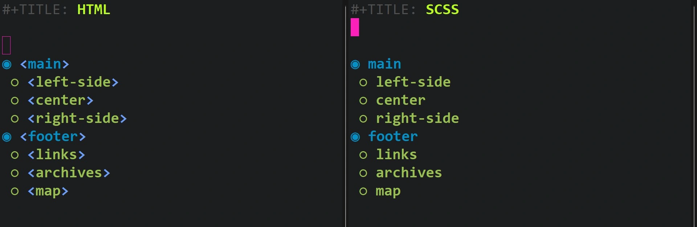

Recent Course Work Registry
PROFILE
Profile +
YURI J. TRICYS -
TECHNICAL WRITER | DATA SCIENTIST | FRONT END DEVELOPER

LinkedIn: yuri-tricys-aa004b26
Github: https://buildhello.ca
Github: https://readingworldmagazine.com
Curriculum Vitae: https://xyz-abc-show-and-tell.github.io/uploads/resume_yuri_tricys_web_developer_2022.pdf
Email: tricys@alumni.ubc.ca
Phone: 1-604-441-9933
Academic Writing +
Hugo Website +
Email Newsletter +
"So you know everything about HTML newsletters? Seems like there is a lot to know..." "Thanks for the feedback, I am working on the presentations..."
Wordpress Website +
Research +
Emacs +
"So you watched all the emacs videos and tried all the packages? Seems like there are a lot of packages..." "Thanks for the feedback, I am working on the presentations..."
PREAMBLE
Preamble +
MOOCS
This document is for potential clients, recruiters, and potential employers.
It lists some of the key courses I've taken and skills I've learned over 10,000 hours of study, practice, and research during the last 12 years.
In some cases, I've been paid to learn new skills, and in other cases, I've used my own time.
Whoever you are, however, if you've poked your nose around here, you have now the opportunity to see the names of some of the courses I've taken and PDFs I've obtained as references. In almost every case, I've had to research which material to use. In some cases, I had some luck finding the material easily, in other cases not so much.
Ranking Efforts
I found study method has a big impact on retention. For example, revisiting material later with note cards improves retention.
I ranked listed materials out of 5 to indicate how thoroughly I studied them.
[5/5] means I watched all the videos and did all the exercises.
[3/5] to [5/5] means I watched all the videos and did between 0% and %100 of the exericises.
[3/5] and under, means I did not watch all of the videos or do all of the exercises.
[Incomplete] means I want to one day finish the course.
[Multi] means a mixture of various course materials, PDFs, code samplings, and other methods were used.
"When you're approaching a new problem domain, you won't have the domain understanding to up-down-design anything that is useful. All of your guess will be wrong. So you need to develop bottom up design as much as possible. And then you will basically assimulate domain understanding as you go. And then you can iterate and build something that's better." ~ Viktor Lofgren
[2023] Courses
[2023] Courses +
[2023] Git In Depth [Nina Zakharenko][3.5/5][Incomplete]
[2023] Dynamic CSS with Custom Properties [Lea Verou][2/5][Incomplete]
[2023] API Design in NODE V4[Scott Moss][5/5]
[2023] Production Grade Next.js [Scott Moss][1/5]
[2023] Introduction to Next.js 13 [Scott Moss][2/5][Incomplete]
[2023] JavaScript The New Hard Parts [Will Sentance][4/5]
[2023] JavaScript The Hard Parts [Will Sentance][4/5]
[2023] Hard Parts Servers and Node.js [Will Sentance][4/5]
[2023] DevOps for Developers [Erik Reinert][3.5/5]
[2023] Complete Intro to Containers [Brian Holt][1/5][Incomplete]
[2023] Complete Intro to Databases [Brian Holt][1/5][Incomplete]
[2023] Complete Intro to React 8th Revision [Brian Holt][3/5][Incomplete]
[2023] Hardcore Functional Architecture Patterns in JS [Brian Lonsdorf][1/5]
[2023] Functional Programming Concepts in JavaScript [Adhithi Ravichandran][5/5]
[2023] Website performance optimization [Jake Archibald and Surma]] [3/5]
[2023] JavaScript performance [Steve Kinny][1/5][Incomplete]
[2023] JavaScript The Recent Parts [Kyle Simpson][4/5]
[2023] Service Workers [Kyle Simpson][3/5][Incomplete]
[2023] Deep JavaScript Foundations [Kyle Simpson][5/5]
[2023] You Don't Know JavaScript Scope & Closures PDF [Kyle Simpson][5/5]
[2023] You Don't Know JavaScript Async & Performance PDF [Kyle Simpson][3/5][Incomplete]
[2023] Responsive Web Typography [Jason Pamental][4/5]
[2023] SMTP relay [Multi]
[2023] SPF, DKIM, DMARC [Multi]
[2023] Brevo Documentation [Multi]
[2023] How to validate emails with custom Node code [Multi]
[2023] How to use Webcrawlers [Multi]
[2023] Configuring your own Email Server in the Cloud [2/5]
[2023] Hugo Documentation [GoHugo][5/5]
[2023] Projects
[2023] Projects +
[2023] Curriculum Writing [End]
[2023] Summary
TODO [2023] Summary +
[2023] General +
- Also, set up pipeline for translating audio to text, using...
- Integrated ChatGPT 3 (free trial version) into Emacs and experimented with prompts.
- Worked with FFmpeg further to set-up relatively instant video/song downloading, conversions, splicing, etc...
- Worked with ___ to extract text from photos
Quis auctor elit sed vulputate mi sit amet mauris commodo quis imperdiet. Elementum facilisis leo, vel fringilla est ullamcorper eget nulla facilisi etiam dignissim diam quis enim lobortis scelerisque fermentum!
[2023] +
Quis auctor elit sed vulputate mi sit amet mauris commodo quis imperdiet. Elementum facilisis leo, vel fringilla est ullamcorper eget nulla facilisi etiam dignissim diam quis enim lobortis scelerisque fermentum!
[2023] +
Quis auctor elit sed vulputate mi sit amet mauris commodo quis imperdiet. Elementum facilisis leo, vel fringilla est ullamcorper eget nulla facilisi etiam dignissim diam quis enim lobortis scelerisque fermentum!
[2023] API Design in NODE V4 [Scott Moss] +
Scott's courses are thorough, and hands on. In this course, he walks us through Node backend server code through primarily express.js (the parent of next.js). He builds out a standard event driven request/response architecture, with a lot attention given to middleware.
He shows how to build out a data-base using an object-relational mapping approach (ORM SDK) with Prisma. By walking through the schema design, he demonstrates the kind of decisions that might go into ORM data architectures.
Code is written in Typescript, because of the completion it offers, but typing is still static. There are some nifty demonstrations of npm libraries in action, like npx, @prisma/client, morgan, cors, jsonwebtoken, bcrypt, dotenv, jest, supertest, and ts-node.
There's some good discussion around REST/CRUD, GRPC, as well as authentication, using token validation, error handling, testing (integration/unit), and deployment.
Scott tests his API with VSCode ThunderClient plugin, which is quicker and simpler than setting up Postman. That's a good example of when to use VSCode, if you're a long-time Emacs user, and wouldn't normally reach for it.
[2023] +
Quis auctor elit sed vulputate mi sit amet mauris commodo quis imperdiet. Elementum facilisis leo, vel fringilla est ullamcorper eget nulla facilisi etiam dignissim diam quis enim lobortis scelerisque fermentum!
[2023] +
Quis auctor elit sed vulputate mi sit amet mauris commodo quis imperdiet. Elementum facilisis leo, vel fringilla est ullamcorper eget nulla facilisi etiam dignissim diam quis enim lobortis scelerisque fermentum!
[2023] +
Quis auctor elit sed vulputate mi sit amet mauris commodo quis imperdiet. Elementum facilisis leo, vel fringilla est ullamcorper eget nulla facilisi etiam dignissim diam quis enim lobortis scelerisque fermentum!
[2023] +
Quis auctor elit sed vulputate mi sit amet mauris commodo quis imperdiet. Elementum facilisis leo, vel fringilla est ullamcorper eget nulla facilisi etiam dignissim diam quis enim lobortis scelerisque fermentum!
[2023] +
Quis auctor elit sed vulputate mi sit amet mauris commodo quis imperdiet. Elementum facilisis leo, vel fringilla est ullamcorper eget nulla facilisi etiam dignissim diam quis enim lobortis scelerisque fermentum!
[2023] +
Quis auctor elit sed vulputate mi sit amet mauris commodo quis imperdiet. Elementum facilisis leo, vel fringilla est ullamcorper eget nulla facilisi etiam dignissim diam quis enim lobortis scelerisque fermentum!
[2023] +
Quis auctor elit sed vulputate mi sit amet mauris commodo quis imperdiet. Elementum facilisis leo, vel fringilla est ullamcorper eget nulla facilisi etiam dignissim diam quis enim lobortis scelerisque fermentum!
[2023] +
Quis auctor elit sed vulputate mi sit amet mauris commodo quis imperdiet. Elementum facilisis leo, vel fringilla est ullamcorper eget nulla facilisi etiam dignissim diam quis enim lobortis scelerisque fermentum!
[2023] +
Quis auctor elit sed vulputate mi sit amet mauris commodo quis imperdiet. Elementum facilisis leo, vel fringilla est ullamcorper eget nulla facilisi etiam dignissim diam quis enim lobortis scelerisque fermentum!
[2023] +
Quis auctor elit sed vulputate mi sit amet mauris commodo quis imperdiet. Elementum facilisis leo, vel fringilla est ullamcorper eget nulla facilisi etiam dignissim diam quis enim lobortis scelerisque fermentum!
[2023] +
Quis auctor elit sed vulputate mi sit amet mauris commodo quis imperdiet. Elementum facilisis leo, vel fringilla est ullamcorper eget nulla facilisi etiam dignissim diam quis enim lobortis scelerisque fermentum!
[2023] +
Quis auctor elit sed vulputate mi sit amet mauris commodo quis imperdiet. Elementum facilisis leo, vel fringilla est ullamcorper eget nulla facilisi etiam dignissim diam quis enim lobortis scelerisque fermentum!
[2023] +
Quis auctor elit sed vulputate mi sit amet mauris commodo quis imperdiet. Elementum facilisis leo, vel fringilla est ullamcorper eget nulla facilisi etiam dignissim diam quis enim lobortis scelerisque fermentum!
[2023] +
Quis auctor elit sed vulputate mi sit amet mauris commodo quis imperdiet. Elementum facilisis leo, vel fringilla est ullamcorper eget nulla facilisi etiam dignissim diam quis enim lobortis scelerisque fermentum!
[2023] +
Quis auctor elit sed vulputate mi sit amet mauris commodo quis imperdiet. Elementum facilisis leo, vel fringilla est ullamcorper eget nulla facilisi etiam dignissim diam quis enim lobortis scelerisque fermentum!
[2023] +
Quis auctor elit sed vulputate mi sit amet mauris commodo quis imperdiet. Elementum facilisis leo, vel fringilla est ullamcorper eget nulla facilisi etiam dignissim diam quis enim lobortis scelerisque fermentum!
[2023] +
Quis auctor elit sed vulputate mi sit amet mauris commodo quis imperdiet. Elementum facilisis leo, vel fringilla est ullamcorper eget nulla facilisi etiam dignissim diam quis enim lobortis scelerisque fermentum!
[2023] Website Reviews +
Build out computer tooling to create appealing website reviews.
Create some reviews.
Quis auctor elit sed vulputate mi sit amet mauris commodo quis imperdiet. Elementum facilisis leo, vel fringilla est ullamcorper eget nulla facilisi etiam dignissim diam quis enim lobortis scelerisque fermentum!
[2023] Completed custom HTML newsletter generator in Hugo +
Quis auctor elit sed vulputate mi sit amet mauris commodo quis imperdiet. Elementum facilisis leo, vel fringilla est ullamcorper eget nulla facilisi etiam dignissim diam quis enim lobortis scelerisque fermentum!
[2023] Build Hello Newsletter +
Collect a list of emails (in-person and via other methods inline with legislation)
Send out the first newsletter.
Quis auctor elit sed vulputate mi sit amet mauris commodo quis imperdiet. Elementum facilisis leo, vel fringilla est ullamcorper eget nulla facilisi etiam dignissim diam quis enim lobortis scelerisque fermentum!
[2023] Refactored Reading World Magazine +
from design prototype
responsive type
more appealing design
Quis auctor elit sed vulputate mi sit amet mauris commodo quis imperdiet. Elementum facilisis leo, vel fringilla est ullamcorper eget nulla facilisi etiam dignissim diam quis enim lobortis scelerisque fermentum!
[2023]Refactor custom JavaScript Youtube Players +
- Object oriented
- Uses YouTube API
- Supports multiple Youtube players from front-matter json file entries
- Error Handling. API updates on YouTube's side, came with some kind of network throttling. Presumably, the stability of their previous system can be regained with some kind of paid subscription. I handled the errors with temporary error handling code. The code refreshes the player when any particular song fails to load. After a set number of subsequent failures, the page refreshes.
YouTube's free API is not as creamy as it once was, but it's still revolutionary from the user side, in that equilibrium price of high-quality music is lower than ever before. How good a thing is that in the long-run, one cannot say. The equilibrium price of many activities and their products is at all-time historical lows while corporate profits are at all time historical highs, indexed for population increases. The professional study of such phenomenon however is no longer in my wheelhouse. It is therefore not my position to comment on it.
Breaks
[2022] Courses
[2022] Courses +
[2022] The Modern Javascript Bootcamp Course (2022) [Colt Steele, Stephen Grider][3.5/5]
[2022] SASS from Beginner to Expert [Arkadiusz Wlodarczyk]
[2022] ES6 Developers Guide [Stephen Grider]
[2022] Deep JavaScript Foundations [Kyle Simpson][2/5]
[2022] The Complete Cyber Security Course - Network Security [Nathan House][1/5]
[2022] Hugo Documentation [GoHugo][4/5]
[2022] CSP Is Dead, Long Live CSP! [Lukas Weichselbaum][3.5/5]
[2022] Cloudflare Documentation [Cloudflare][2/5]
[2022] Mailchimp Documentation and Guides [MailChimp][2/5]
[2022] HTML Email Development [Jason Rodriguez][5/5]
[2022] Responsive Web Typography [Jason Pamental][2/5]
[2022] Chrome DevTools Documentation [Chrome][3/5]
[2022] Gpg4win Compendium 3 [GPG4WIN][2.5/5]
[2022] Projects
[2022] Projects +
[2022] Script Formatting
- Formatted script with Latex
- Provided Latex code
- Formatted script with html/pdf
- Script edit suggestions
[2022] Content Writing
- Researched and edited corporate content for website overhaul
- Sourced charts, converted images, prepared content for webmaster by wrapping it in HTML tags
- Researched UX principles to write the content
[2022] Curriculum Writer
Start - 23 - 29 Oct 2022
- Wrote JavaScript courses in HTML using technical writing techniques
- Sourced, created, integrated graphics
- Wrote JavaScript exercises + questions with answers
- Built JavaScript games
- Converted courses written in HTML to via emacs Google Docs
[2022] Summary [8,752][GOV 11.5k]
TODO [2022] Summary +
[2022] General +
2022 was again a busy year with plenty of progress. I learned to write HTML newsletters and built an HTML newsletter generator in HUGO. I built and integrated the linux based email client `mu` and the emacs library `mu4e` to work with windows. I learned script formatting. I studied encryption and implemented a system for updating SSL on the computer system and managing encryption on windows and in emacs [Cleopatra, GPT4win]
[2022] Script Formatting +
Learned about script writing, and explored several scripts. For example: "The Matrix", "Princess Bride", "There Will Be Blood", "Batman Begins", "Good Will Hunting", "The Usual Suspects", and "The Fifth Element".
Set up a custom template with LaTex, from a library built for that purpose. Then chose to export the script directly from Emacs into HTML and convert from HTML to PDF.
The process required using an Emacs macro, which despite the fact that the 'macs' in 'Emacs' is short for 'macro', doesn't happen that often. Still, there was a lot of fast copy paste, which I call 'Bank, Chop, Slap'.
Hence the final result: Pay Back - Monospace, by Bang/Chop/Slap Editing
I like the name
[2022] Encryption +
[2022] Wrote JavaScript Modules for Course Provider +
In my case, what they say was true, "you never really know a language until you teach it."
The course writing gig was an opportunity to dial JavaScript and I took it.
Covering JavaScript to the level of detail necessary to write a course in it, opened my eyes to many programming concepts I had read about before but did not entirely understand.
Where functional programming fits in, for example. The basics building blocks of any language, from naming conventions, syntax, and data types, to operators, conditional expressions, APIs, loops, functions, and more. In the JavaScript case, there is so much more, from getters and setters, to maps and iterators, prototypal inheritance, asynchrony, constructors, concurrancy and standard built-in objects. JavaScript has become quite an advanced language. Learning it to a higher-level opened up my eyes to many of the things I had learned already but didn't fully understand.
[2022] Typography +
Vertical rythm and modular scale
[2022] Build Hello & Reading World Magazine +
In 2022 I learned and implemented some of the following web development processes in Hugo:
- Rewrote Build Hello content
- Refactor lunr.js custom search with more advanced javascript, again
- Built a newsletter generator in Hugo
- Revamped the CSP code, again
- Custom code using `window.requestAnimationFrame` to lazy load animations and external libraries, like disqus comments, hotjar, and google analytics
- Re-organize content and implement Hugo aliases, again
- Applied directory architecture changes also to Reading World Magazine
- Integrated both websites with Cloudflare
- Refactored Youtube Player JavaScript, again
- Wrote image processing plugins in Hugo
- Used Hugo's js.build framework to pass frontmatter variables into JavaScript
- Built layout, content, partials for book store
- Integrated book store with Splide
- Integrated book store with Snipcart
- Wrote a web-crawler to fetch book covers
- Created workflow to scan book ISBNs into phone, convert to JSON
- Wrote a web-crawler to fetch book data
- Enhanced web-crawler to fill-in missing data
- Enhanced web-crawler again to generate markdown with frontmatter for each book
- Wrote theoretical methodology to select partial blocks in frontmatter based on taxonomies
- Explored flutter (mobile application framework)
Built a custom HTML newsletter generator in Hugo. builds from prototypes using short-codes that can integrate with headless CMS
Built out the template and first draft content of Business Plan.
This same content can be used for a pitch deck.
If you can implement custom partials from front-matter blocks, you can automate module selection from front-matter parameters, like tags, categories, or custom taxonomies. I got that idea from the pancakes theme, but didn't get to write the code until 2023. If the website has say 20,000 product pages, each page can access different advertising modules based on taxonomies. Of course, AI will manage advertisement selection for online stores, but for small business AI costs money.
[2022] Emacs +
In 2022, my emacs installation is quite mature. For most of the year, I'm working with it instead of on it.
This is really exciting, because I'm recognizing big development gains; in other words, getting more done, and in down turns getting the same work done with less effort.
In 2023, higher productivity is already for me the norm. This is again really exciting, because I'm listening to and following really sharp, intelligent, experienced people, and I need all of the help I can get to keep up.
Here is some of the functionality I added to emacs, and also in some cases continued to improve on:
- Install MSYS2 to build a windows compatible mu
- Beef up MSYS2 build tools (gobjc++, make, build-essentials, other dependencies)
- Make `mu.exe`
- Make `mbsync.exe`
- Configure .mbsyncrc
- Integrated mu4e with email clients
- Ensure gp4win is correctly configured (if on windows)
- Emacs easy-gpg and epa
- Correct use of authinfo
- Password generator
- Use Flymake instead of Flycheck (or both)
- Emacs Application Framework (Linux only testing)
- Configure mu4e
- Compile Emacs 29 from source on windows
- Async native compilation
- mouse-drag-and-drop-region-cross-program
- pixel-scroll-precision-mode
- Switch to Swiper
- Write a multiple-cursors hydra configuration
- Added an elfeed configuration
- Wrote elfeed hydra
- Added flutter mode
- Started using eshell more
- Added hacker news
- Password generator
- Net Utils
- Easy GPA
- Proper use of Authsource
- Switched from Mingus to MPDEL
Building a custom email program in Emacs to sync and index email from providers, and send email to clients through SMTP relays was eventually a rewarding adventure.
I say eventually, because it was also buggy hell.
The first step was to decide what kind of mail program to use. Vlogs from Davii Wilson and Mike Zamensky had solved that problem already. Mu4e was obviously the library any healthy emacs enthusiast wanted to install.
The next step was to overcome the illusion that there would be a precompiled build of the mail program `mu` for windows (once you figured out you needed a seperate mail program).
After you've finally confirmed you're going to have to build it yourself, you need to search blog posts for packages, libraries and hopefully windows compatible packages and libraries.
I found a post by Juan José García Ripoll that tipped me in the right direction, which was fortunately an MSYS2 build. Easy, let's get started!
Not so fast! Somehow your MSYS2 build chain is not up to speed, you're missing libraries, you autoconf won't work, and you've got the same build tool on your path in two places (one place is a mystery). How will you build `mu` now, moron?
That's actually the usual experience when you want to build a linux program for windows (for which there isn't a prebuilt binary on chocolatey). Eventually, after building it a few times, I got `mu` up and running.
I installed in the MSYS2 home directory and got to work figuring out the mbsync.rc configuration.
It's really just a mess of config jibberish with various channels, Master/Slaves settings and patterns that somehow will not match the patterns you have on the mail clients (outlook, gmail, protonmail, aol, fastmail, whatever you use).
Having said that, it also leads you into reading up on TLS/SMTP, certificates (like pem and ca-bundle.crt), and then as well GPG and in some cases `sed` and `awk`.
In my case the installation led me down quite a long process of learning and relearning how basic encryption works. You know what exactly are SSL certificates? How do you use openssl? What is Digital Ocean actually good for (I mean for you, the web developer?)
That is what happens when you come into computer science from economics. You're missing foundational knowledge, and you have to figure out what you're missing and what the best way is to fill in those gaps.
In my case, I actually googled computer science undergraduate courses to get the overview and then went into my own archives to dig around (because I already knew what I needed to know, I just didn't know that I knew it, and didn't know it deeply).
I watched a few YouTube videos on networking and algorithms and found enough of the basics to get my head around it. Then I read through the 'GPG4win Compendium', and 'GPG4win for Novices'.
Yes, if I had had access to a `Networking for Dummies` book, I would have read that!
Anyway, good enough, got it done.
Next I installed GPG4Win, Pinetree (actually I think I custom built Pinetree), Kleopatra, openssl, gnu-utils, Mailutils (didn't I have those already), and the emacs libraries 'easy-pg', 'epa-file', 'authinfo', and 'pinentry'.
Actually, you don't need all of those emacs libraries. A lot of that functionality is now built in.
What you do need to do is read up on how you're going to use gpg in emacs and then tweak your way through to a configuration.
Once you have that set-up, you can complete your .mbsyncrc.
Then you can download email to your computer with `mu`, from your email clients, and sync it.
Next, you will build your mu4e configuration.
That is again a matter of research and trial and error.
This was one those cases where Davii Wilson's Youtube channel was really helpful. I discovered system crafters later in my emacs career, so I had already much of the code built out. Listening to episodes was mostly a matter of confirmation (though I did learn about `use-package emacs` from Davii Wilson's config, which I hadn't know about. I think I even use it somewhere).
System Crafters has a great episode on configuring and using mu4e, both to download and manage email and to write and send it.
I also found Alain M. Lafron's videos and blog posts very helpful (and interesting). He has some excellent mu4e code.
Finally, Juan José García Ripoll wrote a nice fix for the MSYS2 mu build `:` flaw
Building and achieving efficiency in mu4e is worth the trouble.
The next big emacs breakthrough for the year was building out a full elfeed configuration.
Elfeed is an RSS reader (wait, who reads RSS feeds anyway?).
Once you have it set-up, you only have to start collecting useful RSS feeds, and weeding out the unhelpful ones.
There are really good sources of information out there, you just have to curate them over time. It doesn't happen instantly, and there's going to be a lot of pruning to get through to best material.
I actually spent some time going through scientific journals and obscure academic library feed collectors, to come up with scientific RSS feeds.
I had already envisioned some fairly simple code to automate post collections for Reading World Magazine.
What matters is the content you get, and when you get it. So you want to be have your finger on the new information pulse, and scientific publications are a part of that (as well as other publications).
In 2023 I built quite a large chunk of the system I had in mind, and then chatGPT hit, and I tried that. Now it's possible to get chatGPT to take care of the selection process intelligently (but you still need to curate the sources, even if AI collects them for you).
In short, elfeed is a magaziners dream.
[2022] Cyber Security +
Cyber security is again the domain of system administration: 'TCP/IP for Dummies,' 'networking,' 'hacking,' etc...
As someone pursuing mastery of web development, you want to know about it. But how much is there to know and how long will it take?
Nathan House's courses were a good place to get an idea of what is involved in cyber security level 101. They are however primarily overviews. There's not a lot of hands on 'let's build this out and test it.
In my case, an 'overview' was what I wanted. I had already the notion the field is deeper than full-stack in terms of time-in, but I wanted to take a look.
So I took a look, and found what I was looking for.
Then I dropped cyber security. To some degree you have to stick with what you know.
Breaks
[2021] Courses
[2021] Courses +
[2021] WordPress Development [Zack Gordon] [4/5]
[2021] WordPress Plugin Development Essentials [Jeffrey Whey][3/5]
[2021] Puppeteer Documentation [Chrome][1.5/5]
[2021] SEO Fundamentals [David Booth][2/5]
[2021] SEO FOR ECOMMERCE [Steve Harris][2/5]
[2021] SEO for Local Visibility [Brad Batesole][3.5/5]
[2021] Hugo Documentation [GoHugo][2/5]
[2021] Anki Manual [Damien Elmes][3.5/5]
[2021] System Crafters Emacs Stream [Davii Wilson][3/5]
[2021] Who Has the Fastest F1 Website in 2021 [Jake Archibald][4/5]
[2021] Google Chrome Developer Tools [Traversy Media][2/5]
[2021] Chrome DevTools Documentation [Chrome][3/5]
[2021] The Five Whys of Web Font Loading Performance [Zach Leatherman][5/5]
[2021] YASnippet Documentation [João Távora][4/5]
[2021] The Open Graph Protocol [ogp.me] [5/5]
[2021] JSON Schema [json-schema.org] [3/5]
[2021] Schema Documentation [schema.org] [2/5]
[2021] Create a Content Security Policy (CSP) in Hugo [Jeremy Likeness][5/5]
[2021] Dynamic Search in a Static Hugo Website [Jeremy Likeness][5/5]
[2021] MSYS on Windows for Unix, Python, vim & git development[Mike Levin][5/5]
[2021] MSYS2 Documentation[MSYS2.org][2/5]
[2021] Projects
[2021] Projects +
[2021] Search Engine Optimization consulting
SEO consulting multilingual site was built with Wordpress Frolic Theme. Performed SEO analysis, prepared SEO report, presented SEO consultation, implemented on-page SEO code. Investigate and update their plugins, as well as PHP version. Was interesting, as it provided an opportunity to look at woocommerce in action. My only other woocommerce experience was course work.
- Changed out Yoast with Rank Math
- Optimized descriptions, image identifiers, links
- Researched key words for english pages of site
- Edited english text, sprinkled with key words
- Updated server-side PHP version and Plugins
Looked into the following plugins
- youtube-embed-plus
- woocommerce cartfragments.js
- contact-form-7
- googletagmanager.com
- woocommerce-product-gallery
[2021] Academic Paper Editing
- Gathered data, prepared charts, with excel. Edited structure, fit punctuation, grammer, and bibliography to style guide, merged language style from samples
[2021] Summary [1,295][GOV 20,600]
[2021] Summary +
[2021] General +
In 2021 I made a lot of progress in both web development and Emacs.
I started learning about optimizing performance. I moved from CSS to SCSS and completely redesigned my web development workflow, which is represented largely in how I structure my repos, and in the more specific case, how I structure my repos in Hugo.
I explored both WordPress and Hugo further, most especially Hugo. I built emacs from source and built out specialized packages, as well as changing how I used it architect root repositories.
I also explored alternate editors, selected a proper domain for what was then my personal blog, and got deeper into learning about browser dev-tooling.
[2021] Creating PDFs +
In 2021, I was experimenting with the PDF format, particularily outputting other formats into PDF. There are a lot of convenient emacs libraries that output from org-files into PDFS, through either the org-mode latex wrapper, or the org-exporter interface.
Those templates offer the option of producing things like meeting minutes, bulletins, custom reports, invoices, and more with lightening speed.
What I found however, was that I like creating HTML documents and then converting them to PDFs via something like Pandoc or the browser's print interface.
As it happens, in Chrome the browser print interface is built on what is called Headless Chrome, which you can access through Node Puppeteer.
What followed was some experimentation with HTML to PDF conversions.
The point of converting from HTML to PDF is to take advantage of CSS and JavaScript in your PDF design. There's just flexibility with CSS and JavaScript. You want to use that when you're creating PDFs. The problem however was that the printing interface (and underlying program) was not exceptionally well-developed in terms of document headers and footers. [I do not know if browsers have improved on that in 2023].
Controlling the header and footer is a big part of writing a document, that's why human resource teams test junior office admins on Microsoft Word. If you can't get the logo, the header text and the page indicators to playball on every page, or, for example, isolate the first page, you can't use HTML and JavaScript to create PDFs.
Some companies had found that problem and built out products to solve it. I looked into Stimulsoft's report-js, jsReport, and print.js.
Stimulsoft and jsReport are paid products with plenty of pre-designed templates like the ones showcased here. Those are good products, but I went with print.js, which addresses just printing HTML and PDF in the browser.
print.js actually requires some experimentation to get the footers to stick to the pages. You need to use tables, or set the position of the footer to fixed at the bottom, and then play around with how the elements play together.
That's because the CSS Paged Media Module Level 3 hasn't made it into the SPEC yet; but, it will.
And either way, if you're not using LaTex (or design software), print.js is still my recommended library for printing from HTML to PDF when you care about the headers.
In general, however, org-mode export interface produces great HTML documents that are easily customized with CSS, which how the page you're reading was created.
It can also be used to style both Word Documents and Google Docs with CSSish styling, via a library called org-odt and the open document technical specification.
In 2022 and 2023 I wrote some JavaScript courses and all of my deliverables were in Google Docs. I found org-mode and org-odt quite useful in styling Google Doc deliverables with CSSish styling (via `soffice.exe`, the engine for Libre Office).
[Yes, this page was exported from org-mode and the optimization is sketchy. If you want to optimize, use a static website generator. With org-mode, you trade a lot for hands-off developer experience and almost instantaneous development and deployment].
[2021] WordPress Development +
Zack Gordon's courses are easy to follow, robust investigations under the hood of WordPress.
He talks about the kind of PHP files you can find in a WordPress installation. He talks about the loading sequence. He goes into detail coding out WordPress loop scenarios.
He talks tags, templates, conditionals, hooks, themes, child themes, starter themes, the template hierarchy, includes, post-types, taxonomies, custom taxonomies, action hooks, filter hooks, and then also plugin development.
The course is comprehensive and comes with loads of code. It's pretty much a must watch for any WordPress developers or would be WordPress developers.
And it's still one of my favorite courses.
I can't say personally, I'm still a WordPress fan; but I also can't say and don't say that WordPress isn't the right system for many situations.
It's just really popular. And it comes free with a browser based content management system people can relate to.
The scale of the user base, surrounds it also in a viable eco-system, in terms of continued improvement and developer supply. Again, both of those are really relevant in a lot of cases.
Having said that, even in the small business case, I like Hugo better.
I like Hugo better the most in the case of brochure sites or SPAs that are not going to see changes every day, or even every month. If the developer knows what they're doing and the situation is right, a static website is hands down the better option.
When you're going corporate and you've got lots of data-base interaction, user interaction, or super complex app-like functionality that's leaning on a back-end API architecture, that's when you want to reach for other languages or combinations of languages. I would like to work in that case of course with Node (or Bun).
In any case, in 2021 I worked through Zack's Gordon's WordPress course with the 'underscores' theme, and then put a little effort into a Newspaper theme build, just to drop the jQuery and mess around with load-time optimization.
[2021] Chrome DevTools Documentation +
If you want to master web-development, you're going to spend a lot of time in your browser's development tools.
Prior to 2021, I hadn't put any course work into it. In 2021, I started reading the documentation and figuring things out.
I learned mostly the basics, like how to change views, measure performance, explore scripts, change devices, toggle load speed, etc...
You know, the waterfall!
[2021] Who Has the Fastest F1 Website in 2021 +
Jake Archibald's articles on F1 Website performance came up in a search for performance and led me to the world of Jake and Surma, two 'high-ELO' Google engineers who podcast the hell out of website performance, among other SPEC related topics.
Their Google podcast was under the name `HTTP203`.
They deliver quite smooth, quite detailed, quite eloquent podcasting, that gives you a decent 'insiders' perspective in web development, browser tech, and performance. [They really are quick!]
You can find the HTTP 203 Vlogs and podcasts at the following two links:
In 2023, they moved on from Google to Shopify, and they're now running their podcast at: https://offthemainthread.tech/
In 2021, I had just discovered Jake's blog, which led me into a pretty deep analysis/study of web peformance, browser audits, dev-tooling, and the waterfall.
[2021] Emacs +
2021 was another big Emacs year.
In 2020, I had switched over to a new org-babel config featuring use-package optimizations, and started building out the hydras and implementing themes in a new way.
In 2021, I picked up where I had left off improving and building on everything I'd introduced in 2020, and adding additional key changes.
Here's a list of a few of the Emacs features I implemented or improved on in 2021:
- Restructure emacs configuration into dot files
- Build out custom theme styling
- Continue building out hydras
- Theme the org-mode calendar
- Add a ton of org-mode functionality
- Write custom org-mode hydras
- Switch from Helm to Counsel and Ivy
- Integrate ivy, ivy-rich, all-the-icons-ivy with counsel
- Add move frame commands
- Add resize frame commands
- Add new window scratch buffer
- Add elwm mode
- Write custom elwm mode window configurations
- Write a window hydra configuration
- Add custom shift and rotate window commands
- Add resize window commands
- Add open, split, and close windows
- Add custom frame commands
- Write a buffers hydra configuration
- Enter into a long experiment with tab-modes
- Add new frame scratch buffer
- Add swap and rotate buffer commands
- Shackle
- Beacon
- Better scroll
- Avy
- Mwim
- Tooltip, Postip
- Supersave
- Stripes
- date and time inserts
- Write a search hydra configuration
- Write a company hydra configuration
- Configure 'prettier'
- Rewrote the entire theming apparatus
- Added custom theme faces for each them
- Custom dired-filetype-faces
- Customize hydra-posframe UI on per theme basis
- Switched from autocomplete to company-mode
- Configured custom company backends
- Wrote custom company mode controls
- Themed company dropdown to match themes
- Company-frame swap parameters on theme switch
- Integrated company and Yasnippet
- Programatically generate Yasnippets from public snippet gists
- Write custom yasnippet generator files
- Learn to use yasnippet properly
- Create PDFs with Emacs using Latex and org-mode
- Add slide functionality with org-treeslide
- Write a quote generator in Emacs
- Write a git hydra configuration
- Implement emacs bookmarks
- Write a bookmark hydra configuration
Almost all of the changes listed above are awesome and super cool and should be written about further. But given there's only so much space and time to give you an idea of what I've been up to, I will write here only about a few of these features.
On that note over-hauling the theming system and loading custom theme faces on theme loads made a big difference in how themes present, and how you can switch between them.
One challenge with themes is that custom themes add custom faces. When you change the theme on the fly, if the new theme doesn't overwrite the old themes custom face, it will stand out mess up the theme, especially if there's a background color that doesn't match. Your text will be highlighted in some odd color.
I rewrote the themes with functions that load on the fly when the theme is called and overwrite the custom faces from the previous theme. When I say 'custom' faces, I'm not talking about theme customizations you access through the menu (if you use the menu). I'm talking faces loaded in the initialization. This system works really well, but does require a bit of extra attention to the faces when initializing various modes, like org-mode, calendar-mode, dired-mode, and the company drop down.
I customized font-faces for each of the themes.
The bookmarks hydra and its integration with ivy completion and counsel in the dropdown is probably one of the best features for getting around the computer. I'm jumping to book marks all of the time.
Windows and frames configurations and hydras are also a kind of backbone for the entire init. They add sleek functionality in terms of using your computer to set up instant workable minimalist window configurations.
It turns out I use yasnippet with company integration heavily.
I personally do not work with the dropdown and completion on most of time, because that gets a bit excessive and I don't always want completion when I'm typing text.
I set the default without the dropdown and added a dropdown toggle. I also configured the dropdown to appear when I insert a snippet.
The result is that I'm using snippets, usually when I know they are there, for specific types of functionality. And I use a lot snippets.
With this system, you can also use snippets to remind you of things. For example, if you're writing a media query you might want to look at the device widths for each query. Viola, a snippet will give you the preview you need.
Most people code that way anyway. The SDK completion could be the best part of using typescript, for example. So yes, of course you pretty much have to implement a decent completion framework in emacs. The way I did it just ended up working out well for my personal working style, and I think it's a pretty reasonable and easy system to use.
Another big change is that I continued to build out the literate configuration by partitioning the sections exported into individual dot files. That's the way it's supposed to be done, so it was nice to implemented that.
It's only expressed in a few bullet points above, but building out the org-mode functionality was probably the biggest emacs related project during the year.
There were a lot of UI type org-mode changes, from fontifying headlines, and bullets, to adding 'pretty-entities', 'org-emphasis', sticky headers when toggled, and the usual keyword highlighting.
I also implemented a full org-capture structure, which useful even though I use bookmarks most of the time.
Configuring org-babel properly is great (do languages, tangle shortcuts), as is adding defaults for exports and building out the org-export interface with additional libraries.
Then I added also of course a robust selection of org libraries. Everything from ox-html, ox-word, and ox-odt to image insertion, custom agendas, ox-reveal slides, org-tables, and org-query.
I added also the search hydra and integrated it with a ton of search functionality. Everything from 'counsel find library' and 'counsel iBuffers' to 'ag searches,' 'everything' integration, and helm org-rifle (which works great with custom agenda file swapping).
The final 'biggest' most 'useful' change is just a tiny thing I didn't bother to mention above.
I rebinded the 'm' key into a super-key, like the `x` key, and bound all of the hydras to 'C-m' (do you say 'rebound' instead of 'rebinded').
Using both 'C-x' and 'C-m' as Meta keys is really powerful.
Also, there is a kind of balance and tempo that comes out of launching hydras off 'C-m' with the right hand and then selecting their keys with left hand (when applicable). You get this kind of rythm in your emacs sessions that is helpful in terms of learning patterns that match key-strokes with functionality.
Finally, in 2021 I started following Emacs Conf, continued following Davii Wilson and Mike Zamensky, and also picked up various bits of code and snippets from people like John Kitchen, Leo Vivier, and Protesilaos Stavrou.
[2021] Build emacs from Source +
In 2020, I built my own Emacs software from source code in WSl. In 2021, I built it again, this time using the MSYS2 Unix system.
I had not documented the WSl parts of the build carefully enough and just happend to find a blog post with an MSYS2 build instructions.
In fact, after building Emacs 29 on Windows following the MSYS2 instructions, I blogged about it, which you can read here: https://readingworldmagazine.com/emacs/2022-02-24-compiling-emacs-29-from-source-on-windows/
The build required learning a fair amount about MSYS2, which I have used since to build other linux software for windows (like `mu`, for example), because there is sometimes source code available in the MSYS package repository.
[2021] Ecurosia & Reading World Magazine +
What '.com' word has 5 vowels and fewer than nine letters?
Short '.com' domain names are still all the rage. They're easy to remember, search engines love them, they're bold, succint, snappy, and so on...'
- Facebook.com
- Amazon.com
- ebay.com
- quora.com
- twitter.com
The list goes on ...
In 2021, it was time to drop 'Cloud Nine' -- which I had discovered was anyway an Amazon cloud-based IDE -- and add an official Magazinish title.
Hugo is perfect for a magazine. And today, digital magazines are where it's at. They have all the pizazz of physical magazines without the limitations. You can add products, landing pages, news-columns, apps, sound, videos, and any kind of art you can port to the web.
Digital magazines are contemporary 'boutiques,' 'bodegas,' 'haberdasheries,' 'millinaries,' 'perfumeries' -- okay maybe not 'perfumeries' -- 'bazaars,' 'newsstands,' and 'kiosks'.
They really are a thing.
So that was that, now I only needed a name.
As usual, I wrote down and researched as many names as I could come up with and settled on 'Ecurosia' (ecurosia.com).
'Ecurosia' you might say! What in God's name does that mean? And you'd be correct to question my word choice.
It doesn't mean anything, and further more, it looks 'esoteric,' which means more or less 'specialized', but in this context is more suggestive of 'circus-like'.
I sat with it for a few days.
'How obscure!'
It certainly was a visual name.
After a day or so I came to dislike it very much, and swapped it out for 'Reading World Magazine', which kind of just came to me in the middle of the night.
So that's the story of Ecurosia and Reading World Magazine. It just goes to show how much inherent risk there is in creativity. Pragmatic is always just a few steps from brilliant, and brilliant is always just a few steps from disastrous.
[2021] Build Hello & Cloud Nine +
2021 and 2022 were big years for Build Hello and Cloud Nine (Reading World Magazine). A lot of the work is just figuring out how to capitalize on the fast development cycle the Hugo team is following. There's also some catch-up, in terms of where they are at in 2021 relative when they really got rolling post 2016/2017.
In 2021 I learned and implemented some of the following web development processes in Hugo:
- Outputting json search index in Hugo
- More advanced use of lunr.js with custom JavaScript
- Large selection of short-codes
- CSP policy implementation
- Hot Jar integration
- Schema in Json
- Restructuring content to use Hugo 'page bundles'
- Dropping custom CSS into page bundles (custom page-level styling)
- Restructuring Repository Architecture to use Emacs 'file generators'
- Proper viewport configuration [initial-scale,minimum-scale,shrink-to-fit]
- Summary truncating
- Proper use of canonicals
- Minimizing load time with prefetch, preload, and preconnect
- Generating favicons with npm libraries
- Enabling source maps in Hugo
- Resource pipelines with Hugo 'ExecuteAsTemplate'
- Selecting and loading resources per 'content type'
- Cachebusting with Hugo 'fingerprint'
- Minimizing load time with 'critical CSS' extraction libraries
- Content types, partition above the fold styling
- Proper use of 'defer' on script tags
- Processing images for more than one screen size
- Automating background color and transparency to proxy image tinting
- Alpine.js usage
- Custom CSS reset
- Custom media queries, with Chrome breakpoint integration (for testing)
- Fluid-type, responsive text-scaling with SCSS
- Convert font-awesome icons to svgs and imbed
- Wrote Youtube players with custom JavaScript
- Custom playlist management with JSON/Org-mode/Elisp
- Adjusting font colors for accessibility
- Ensure screen readers like links
- Secure links against cross-site-scripting
- Related and Similar post processing and weighting
- Implement prebuilt content and schedule automated deployment
- Learn Hugo debug-deprint, to troubleshoot loops
- Take apart Pancakes theme: learn to implement custom partials from front-matter blocks
- Continue exploration of npm libraries [minification, css watch, sass compilation, build pipelines]
- Develop system from course to build out css-grids from prototypes across devices
- Optimize pages for tiny to massive screen resolutions
- Reintegrated css-grid with flex
- Advanced Hugo partial development
- Advanced Hugo layout development
- Refactor CSS to SCSS
- Generating JSON search indices from Hugo
- Build Pipelines vanilla npm/package.json
- Integrate minification, uglify, fingerprinting, preloading, prefetching, preconnect, preloading fonts
That's really a lot of stuff to cover, and the process is organic, in that I want to achieve objectives and I'm pushing hard against the clock to get there, always trading off between the fastest/best way now and the fastest/best way again and again.
I'm biased toward the future. I always build for the fastest way again and again as best I can. And that means usually researching and testing methodogolies.
Some of the features mentioned above were not properly implemented or written until 2023 (and probably they could improved on today). CSPs for example, I didn't really implement well until 2022. The client-side JavaScript search functionality was written in 2021, then rewritten in 2022, and then rewritten again in 2023.
And it's the same thing with the YouTube player code. When I first wrote it, I wasn't even using template literals or the non-embedd version of the YouTube API.
In terms of analytics, which I don't always care about as much I could, I found Hotjar to be a bit heavy on the load time. Typically, with JavaScript libraries that write to the DOM, I will delay the script with 'getBoundingClientRect()' until the elements are in the viewport. With Hotjar for some reason, I didn't take the time to optimize it, I just dropped it. But I think if you're into analytics, Hotjar, which is a heat map, isn't any worse than say Google Analytics.'
Today I don't use analytics on Build Hello at all and I use only Clicky on Reading World Magazine. Clicky gives numbers, URLs, and IP locations on a daily basis, and that's pretty good. Both sites are fed also through CloudFlare, which offers also analytics.
Reading World Magazine gets more than 50,000 views a year, which is to say very few. The distribution is now around 90% emacs related posts, but was closer to 98% emacs related posts in 2021. In 2023, I dropped a large selection of the emacs posts.
One big change that played out in 2021 was the move to emacs org-mode file generators. They are kind of a game changer, because you can store all of one type of file in a file generator, and use that generator to manage those files by commenting out backups and commenting in test versions, or copy pasting sections. You get folding, and all the other advantages of using org-mode.
In terms of refactor time, when I made the switch I did have to go through all the partials, layout, content files, and resource files, and put them into generators, which was a task.
File generators work well with Hugo because they give you a bit of CMS action. You can search, manage, change, update, schedule, and test files and versions from within emacs using your system tools, rather through an GUI interface. But, in the wild, an administrative team is going to need headless CMS integration. So file generators are developer experience thing, but damn are they a good one!
Hugo also implemented page bundles in 2020, or 2021, or something. Page bundles are folders that contain resources, like images, CSS files, videos, and JS files for a single post. Organizationally, it's good to have that level of grouping, so Hugo built some tooling around that feature and implemented it. That meant you could access resources from page bundles. Once specified as 'resources' assets can be processed with specialized Hugo functions. I rewrote the entire architectures, including post names, slugs, and paths to utilize page bundles.
My work with dev tools led to of course optimizing builds for load-time, and that meant learning about critical CSS. As it happens, there are npm libraries and browser plugins that were built to isolate and extract above-the-fold CSS. I played around with those for awhile, testing out configurations.
Ultimately, when I rebuilt the architecture to support file generators and page bundles I added functionality to partition and inline above-the-fold CSS.
I also built proper design prototypes for Build Hello in Figma, which made it easy to over-haul the design. That meant redesigning the CSS grid, across devices, and the way it worked with fluid. I'd rework a lot of that code in Build Hello in 2022 and then implement it in Reading World Magazine in 2022 and 2023.
Hugo has made a practice of integrating open source npm library functionality. The standard example is `--watch`. You don't need to add `--watch` as an argument in Hugo like you do in node, or bun, or node-sass.
Hugo also integrates node-sass, html-minify, js.Build, and uglify, so you need to write specialized code to take advantage of those bundled features (and they keep adding to those).
I rewrote the build-pipelines and supporting code to do just that in 2021 and 2022.
I also added a SASS version of Fluid Type, but to be honest, I didn't use it properly and didn't know what it was I was doing exactly until after I took Jason Pamental's typography course in 2022/2023.
While it would take me a few years to really process everything I learned about web development in 2021 and 2022, both years were highly productive.
[2021] Explore VSCODE and ATOM +
Configured to a very basic level both Atom and VSCode. The idea here was that a tooling set-up that is only Emacs limits your ability to communicate with other developers.
One projects forward and considers that the Emacs development culture is based primarily on happenstance, and then determines there will be some tools that will be only available in over-the-counter editors.
The day after I wrote this in 2023, Emacs Copilot landed in my feed update. Yup, that was the example I was thinking of!
Anyway, unfortunately Atom, the JavaScript based editor created by Facebook, is now obsolete. But VSCODE is going strong, and in some case, for example API in testing in Thunderclient vs Postman, it just make sense to use VSCODE.
Breaks
[2020] Courses
[2020] Courses +
[2020] Hugo Documentation [GoHugo][2/5]
[2020] Figma Complete Web Design [Vako Shvili][3/5]
[2020] Complete Web & Mobile Designer Figma [Andrei Neagoie][1/5]
[2020] Krita Manual [Krita] [1/5]
[2020] CSS3 Animation & Transitions Crash Course [Traversy Media][5/5]
[2020] CSS Animations 101 [Donovan Hutchinson][4/5]
[2020] Sass-CSS Course [Dominik Lincer][5/5]
[2020] Sass-CSS With Superpowers [Jesse Hall][5/5]
[2020] Responsive Web Design Essentials [Daniel Scott][2/5]
[2020] Ledger Command Line Accounting [John Weigley][3/5]
[2020] Using Emacs [Mike Zamansky][5/5]
[2020] System Crafters Emacs Stream [Davii Wilson][1/5]
[2020] Google Chrome Developer Tools [Traversy Media][3/5]
[2020] Visual Studio Code Tutorial [Manuel Lorenz][2/5]
[2020] Atom.ReadTheDocs [Atom][1/5]
[2020] Linux Mint Documentation [Linux Mint][2/5]
[2020] The Linux Programming Interface [Michael Kerrisk][2/5]
[2020] Projects
[2020] Projects +
Extract data from large images
Manual cut and paste. Would have been faster with Tesseract, and then to edit the text (which I tested afterward). That strategy still requires attention to detail unless the pictures are perfect high-quality. There will certainly be gains in this department as AI tooling expands in 2024.
[2020] Summary [0][Gov 11k]
[2020] Summary +
[2020] General +
2020 was the year I applied essentially 2-years of research to re-imagine my emacs initialization.
The load time speed improved 30 to 50 times over. Initialization file management, development, troubleshooting, and backup became easier, again easily 10-fold.
Package foundations for an entire new system were put in place, a new system that would see counsel and ivy instead of helm, company mode instead of autocomplete, a freshly bolstered selection yasnippets, improved yasnippet management, and a hydra system that turned emacs into a highly functioning, super-powered, text-editor.
I also set-up my first linux distribution, outfitted it with software programs, engineered a web development environment, and built and ported over the same emacs build and initialization configuration.
I made progress with CSS, SCSS, responsive web development, and animations, and solified my understanding of foundational level web development principles by implementing web development features in both buildhello.ca and cloudnine.github.io (readingworldmagazine.com) using Hugo.
Finally, I continued with the design studies I had been doing for the two years prior, and built out a new accounting framework using the command line program, ledger, and the emacs wrapper for ledger functionality.
[2020] Emacs +
In 2020, several years of Emacs research came to fruition. It was possible to rewrite largely the entire configuration to apply the literate programming principles taught by Howard Abrams.
This new configuration loads from the initialization file a byte compiled file that is 'tangled' automatically by org-bable-tangle-file if not present.
That means you can store your entire emacs configuration in an org-mode file that is awesome to work in and exports sections to other files.
In 2020, my system was not as well-configured as it would be in 2021, when I looked into Davii Wilson's dot files config [he uses a popular system of initialization file organization that outputs individual org-file sections to thier own respective files].
But 2020 was a pretty massive improvement over everything I'd done up to that point.
Here are some of the features I implemented in Emacs in 2020:
- Adding configurations to hydras
- Emacs implemented snippet system
- Customized autocompletion code
- Custom yasnippet system
- Learn to export from org-mode to html and pdf
- Rewrite code for buffers management
- Rewrite code for book marks
- Explore emacs conferences to see how others are implementing emacs
- Literate config
- Program launcher
- Company-mode
- Browsers hydra (Harry Schwartz (yawn)), Engine Mode
- Still using Helm-mode
- Chrome, Firefox, and Helm bookmarks
- Editing hydra
- Adding themes [base16, doom-themes, modus-operandi, leuven, etc.,]
- Anzu
- Helm-ag
- Flymake
- Latex-mode [auctex]
- Data Science Hydra
- Git and magit
- Git-gutter
- Org-agendas
- Build shell hydra, with toggles
- Connect to git, powershell, eshell, wsl, cmd
- Customize command-line mode
- Ledger with Austin Walker/John Weigley
- Built out calendars and schedules with emacs
- Neo tree
- All-the-icons
- Configure docview mode
- Customize super-keymap
- Install all-the-icons across dired, helm, ivy, ibuffer, ivy-rich
- Custom replace whacky characters with latin1
- Emacs bookmarks
The big change on the year is that I'm implementing emacs from a literate configuration, which is a big improvement in organization and development time.
Another big change is that everything is moved over to John Weigley's use-package, which was in my case the most logical and efficient way to reduce load time and organize package-level code.
Other major changes that built on research from the two previous years included:
- Beginning the move from the autocompletion framework I was using to company-mode
- Re-organizing code functionality into a spoked user-interface of hydras, using hydra-posframe
- Building a program launcher to launch external programs from within emacs
- Building emacs from source
- Using org-mode generator files
In 2020, I had maybe 5 to 10 core hydras, including an appearance hydra, a directories hydra, the helm-hydra (center spoke), a rudimentary buffers hydra, an editing hydra, a program launcher hydra, a hugo hydra, a browser hydra and a few more. I would continue to add to the hydra emacs UI system for the next few years. The resulting UI is a great way to access instantly any functionality you've hard-coded easy access to. It comes with a central spoke, which has connections to other spokes, each one of which contains groups of hard-coded functions and a link back to the center.
The spoke hydra UI system turns emacs into an incredibly savvy, powerful, game-changing piece of software.
'Generator files', which is my own name for org-babel file exports, completely redefine how you can organize a directory's architecture. They are another massive game-changer. Learning org-babel showed me that I could use them. I didn't start implementing them in my repos, however, until 2021.
[2020] Overhaul and reinstall windows operating system +
There was a glitch or an error of some sort that led to a complete reinstall of windows. If I recall correctly it was a bad update that overwrote the restore points. Rolling back wasn't an option.
That was a nightmare, and the impedus for building a backup linux system (linux because it's low-memory usage fit the backup computer).
In 2023, I have a quite robust system of backups, both physical to external storage and cloud backups, as well as detailed step by step instructions for rebuilding systems. Having said that, there is significant room for improvement in my systems dev-ops. I have not put my energy into building out an elaborate nixOS configuration for example, which could be used to rebuild your entire system from a script on a rebuild.
Building out reproducible operating systems is in my opinion system administrator work. A good system administrator is an invaluable asset to every team.
Ironically, I rebuilt the entire windows system again in 2022, when I upgraded to windows 11. Oof!
[2020] Updated datafirm.ca with responsive CSS using SCSS +
Two courses in SASS and CSS would lead to both a greater understanding of responsiveness and an entire reimplementation of my CSS system. These are Dominik Lincer's and Jesse Hall's SASS-CSS courses.
Exploring Sass (I use it as SCSS), would lead to also a deeper understanding of CSS in general, since there are plenty of SCSS snippets that offer insights into how CSS works. Nesting SCSS blocks is a primary example. The CSS renders with `>` to increase specificity of the CSS selector, which is not easy to override further down the cascade.
In my first builds using SCSS, I was matching the HTML structure in SCSS org-file generators, because you can open both files on either side of the screen and visually find where you want to make an adjustement in either file.
That is challenging to visual so have a look at this image:
HTML is on the left, SCSS on the right. Both sides have folding headings and sub-headings (fold with TAB). If you open them there will be code blocks that output code chucnks to their respective files when you run a function in emacs. The 'left-side' HTML partial belonging to the `main` html tag, will have its own file and the '.left-side' CSS class will be nested under the '.main' CSS class.
Because you can nest SCSS, you can match complex structures exactly to their HTML counterparts and easily find your way around the SCSS (to get where you want to get to do your development).
That was the system I used when I first learned SCSS in 2020. I don't use that system any more, because it's overly complex and you end up writing features more than once. I have a better architecture. But that system led to a much deeper understanding of specificity (it led to reading to the SPEC) and ultimately the system I use today.
The main reason I got into SASS was to organize files. You can save a lot of work by reusing your files when and where you need them. But after a few years, the benefits are too many mention.
I might forego SASS on an SPA (or not), or a React project that uses CSS modules; however, to be honest, I haven't explored CSS modules enough to see if there's any point. SASS is block scoped, and so are custom CSS properties.
On top of the SASS however, when we get into 2023, I'm mixing custom CSS properties with SASS. That's really powerful, especially if you have the vision to keep it as simple as necessary and only mix exactly what you need.
Anyway, SASS came with building a file with exactly the media queries I wanted, and I built also snippets to match those media queries, of course, and then the matching views in Google Chrome's dev-tools.
Dev tools gives you the option of customizing views for responsive dimensions, and you can export those to a configuration file. That's really useful if you have a lot of media queries.
Finally, I added responsiveness and the SCSS structure to datafirm.ca (as well as buildhello.ca and what was then cloudnine.github.io).
[2020] Installation of Linux Mint +
In 2020, I installed Linux on an free (Airmiles) HP Laptop, 1.4 GHz AMD E1 Dual Core, with 4GB Ram. It came with Windows preinstalled with maximum bloat. HP typically come with integrated motherboards, and no extra slots, so using it while I overhauled my other system was a matter of installing a low memory Linux operating system.
Mint is not exactly the lowest memory Linux system, but I found it similar to Windows and the HP took it well. It still hums along nicely, which is amazing. Like most of us, I no longer remember the things we could do with 1.4GHz when Y2K was a problem.
I did everything Unixy up to that 2020 on Cygwin or WSL. It was great to build out a working Mint installation.
The Mint system backup also enabled an upgrade of the main computer, and led to the customization of a proper Emacs configuration for Linux systems.
- Selected and installed distribution Mint
- Learned Ubuntu package manager, installation customizations
- Tested distributions
- Watched a few Luke Smith Videos
[2020] Ported Emacs Configuration to Linux +
Porting emacs to linux, which is what it is originally built for, was an opportunity to build the program from scratch. In truth, I had used it before on WSL as a package, because as an emacs user you want to open files in emacs and not Nano or Pico or VIM, or something else on WSL.
But then I realized I wasn't going to get out of the shell without some kind of X11 forwarding (in those days, you couldn't access WSl programs in the windows GUI without treating them like remote programs and hacking into the windows application display). So I left it largely alone in terms of initialization.
In 2020 I was setting up streamlined linux system, without the need of any windows software at all. I found this article, as well as a couple of videos and figured out how to build emacs from source on Linux.
Once I had Emacs up and running, I only had to translate custom lisp code and install the usual packages.
I found it easier to build an emacs init on linux, but challenging to select and install software comparable to the programs I was using in web development stack on windows.
For example, LAMPP was a little different than XAMPP and required some troubleshooting and searching blogs to find the locations of its various pieces.
Similarly, FIGMA for linuux was a little different, as was the linux version of Fast Stone Image viewer, a program I use to quickly crop and resize photos.
Eventually, I explored linux options for the types of programs I used on windows, and built out a solid and workable linux system, complete with a full web development workshop and emacs installation.
For awhile, I worked on the two systems simulataneously, going from one to the other and pushing the results to a git repo. Primarily because I wanted a workable backup system. I found there are some linux programs I really like, and I use those today on Windows through WSL, because in 2022/2023 I typically just work on Windows.
I had also kept my linux and windows initialization configs in seperate files.
In 2023, I keep them in one org-file, with guards that only load code for windows on windows and linux on linux. This is easier, because you can maintain only one file in your git repository, but it comes also with a really large org-file.
My org initialization file, for example, with comments, code blocks, headings, and code for windows, linux, or wsl is more than 21,000 lines.
In short, building out a custom web development environment on linux was a matter of:
- Building and customizing a full emacs installation
- Sourcing programs, change CHMOD values for programs (making them executable)
- Building some programs in linux with 'make' and the GCC toolchain
- Lots of custom file configurations
- Testing programs and work flows
- Connecting the two systems
[2020] Build Hello & Cloud Nine +
2020 in terms of web development was largely about understanding standard procedural web development implementations at the micro-level. I had seen many of them before but had not dug into them deeply.
Hugo is good for that because you're not installing a plugin that does it for you, somehow. You're deciphering and writing custom chunks of code to implement your feature, and that forces you to understand it.
The open graph protocol is a good example. Of course you need to read Facebook's documentation page dedicated to it. And once you've done that you can write a piece of code that will implement 'og tags' in your head tag when you write specific front-matter or trigger other conditions.
In my case, reading the OG documentation taught me there is top-down specificity. If you want an OG picture, for example, and you have 5 pictures, you can list each of them in order and OGP will select the first one it encounters that renders.
So if you have a page bundle (that's a folder for a single blog post) with 5 images in it, you can write code to order them by position, or alphabetical sorted title, or front-matter reference, and the code will print 5 opengraph image meta tags to your head tag, ranked.
When you post the post to Facebook (or Tweexter), the first one will render, but facebook will give you the option of selecting one of the others (or cycling through them, depending on your FB version).
That same level of detail applies to all kinds of standard features, from your json schema, to your description text, to your summaries.
So 2020 was really about learning, deep-learning, and re-learning web development fundamentals. That process would go on for the next few years.
Hugo was hugely helpful for it.
Here's a list of some of the web development features I implemented in Hugo during the year:
- npm node package pipeline with package.json
- Hugo internal SCSS processing
- Open Graph Protocol
- Code block syntax highlighting in Hugo
- Comments using Disqus
- Pagination in Hugo
- Contact form using Hugo and Zapier
- Rudimentary custom built image processing stacks
- Standard use of layouts and partials
- Taxonomies
- Configuring (Hugo) Caching
- Sitemaps
- How integrity works with scripts
- Local vs production builds
- Uglifying JavaScript
- Minifying HTMl
- Post processing CSS to render across browsers
- Basic shortcodes
- Basic loops
- Yandex, Bing, Google vefification and indexing
- Robots tag usage
- Compression and SSL on servers
- Github Pages configuration
One of the big things on the year for me was experimenting with build tools. I tried to make sense of Grunt and Webpack, and didn't really feel like wading through the plugins and customizations.
Then I read one of Chris Coyier's posts (CSS-Tricks) on vanilla npm scripts, and went with that.
Seriously, why bother with a more complex task-runner when you can use npm scripts?
Well today (in 2023), I have better vision, and I get why Rollup was a thing, and how cool Vite really is - and why you might want to explore Bazel.
But honestly, at my scale, vanilla npm really is good enough.
I also built in 2020 auto-preview and deploy functionality into Emacs using 'easy-hugo' and custom shell scripts, as well as short-cuts for cycling through website repos, jumping to them, and opening the Hugo localhost in a browser of choice.
Finally, I put quite some effort into 'getting' and implementing animations, through a YouTube tutorial from 'Traversy Media', Donovan Hutchinson's 'CSS Animations 101 course, and implementing animations like text and others in to Build Hello.'
Breaks
[2019] Courses
[2019] Courses +
[2019] React for Absolute Beginners [Victor Temprano][4/5]
[2019] Inkscape Courses [Nick Saporito][1/5]
[2019] The Linux Programming Interface PDF [Michael Kerrisk][1/5]
[2019] Windows Subsystem for Linux Guide [Kenneth Reitz][4/5]
[2019] Using Emacs [Mike Zamansky][3/5]
[2019] An Introduction to Programming in Elisp [Robert J. Chassel][2.5/5]
[2019] Google's Go Programming Language [Todd McLeod][2/5]
[2019] The Little Go Book [Karl Seguin][1/5]
[2019] Joomla! Documentation [Joomla] [1/5]
[2019] Learn Modern JavaScript [Steven Hancock][2/5]
[2019] Why npm Scripts? [Damon Bauer][5/5]
[2019] Projects
[2019] Projects +
[2019] Wikipedia Submission Writing/Editing
- Read and reviewed Wikipedia submissions
- Prepare publications for Wikipedia
- Revise update/edit Wikipedia publications
Configured WordPress installation of Avada Church Theme
- Installed PHP, WordPress on host
- Configured MySQL installation on host [updated, configured settings]
- Installed PHPMyAdmin on host
- Installed slider, selected images
- Installed a video on home page
- Installed selection of plugins
- Installed logo and images
- Customized Navigation Headings
[2019] Summary [1875][Z30k]
[2019] Summary +
[2019] General +
As usual, there are other challenges, but 2019 is a good year in terms of making my way toward expertise in the subject matters chosen already so many years earlier.
I make a lot of progress in Emacs knowledge, which makes the next few years productive in terms of applying that knowledge. I also make some headway into web development by tackling two new sites simultaneously using the Hugo static website generator framework.
[2019] Hugo +
Learning Hugo was not so easy. There were no courses or books available at the time, so I figured everything out from trial and error, reading community comments, and browsing blog posts. The Hugo community is full of people doing much the same thing and posting about it, which does help in learning Hugo. Also, there is a team of highly responsive people in the community who are pretty on it, when it comes to troubleshooting code.
[Actually, the total number of people posting on the Hugo community site is small relative the underlying population denominators in the regions where it's available, but those few people still create an effectively large and comprehensive help forum.]
The official documentation for Hugo was (and is) a confusing read. In my case, it was easier to read when I copy pasted the individual pages into an org-file and changed the theme (you can also clone the repo).
The problem was a combination of layout, font-selection, and content gaps. Changing up the layout and fonts made it easier to understand.
If I were to learn Hugo again, I'd work first through `Regis Philbert's` posts from the New Dynamic, and his personal blog. Those tutorials on data handling, resources pipelines, and other topics, cover some of the material that is less well explained in the documentation. I'd also work first on 'getting' the context variable `.` (it's a dot), which is for passing and referencing scope.
There are also many small bits of knowledge that seem difficult to come by, like for example how white space works from the 'liquidish' templating Hugo uses. Btw, it works like this: a dash on the inside of the double braces used to insert Hugo code into HTML removes all the white space after render. Two consecutive chunks of Hugo code inserted into HTML and containing HTML will have no end-of-line between them if written like this:
{{- $hugoCode -}}
{{- $hugoCode -}}
Whatever is in the variable $hugoCode will render on one line.
If, on the other hand, they are written without the trailing dash in the first block or the opening dash on the second block and with a newline between them -- see just below -- when they render to HTML the newline will be preserved.
{{- $hugoCode }}
{{ $hugoCode -}}
The dashes eat up whitespaces and newlines. That's the kind of thing you just find somewhere in a seemingly random Hugo blog post, and there are hundreds of those little things.
So you just have to read the threads, or hire something to talk you through it.
[2019] Build Hello +
In 2019 I started building simultaneously with Hugo both back and front-ends for cloudnine.github.io, which would become eventually readingworldmagazine.com, and buildhello.ca.
Building the two sites simultaneously was not planned. I was just experimenting with two themes at the same time while figuring out Hugo. Whenever I learned and implemented new code on one site, I wanted to know how to implement it on the other. Then I'd work on that one until I figured something new out, and then switch again.
That process led to the notion of Cloud Nine being a personal blog and Build Hello being a small business website.
Build Hello however, was the priority, and I put a lot of attention into it. For example, I put together a list of some 100 or so names, and started checking their availabilty. The words build and hello came up in a number of places, but not together. When I finally put them together, I had them the other way around, but that URL was taken: see `hellobuild.com,` it's super cool! I flipped the words around and liked it so much I bought it with the '.ca' extension.
In 2019, I also designed around 50 Build Hello logos, before narrowing them down to the current one. Just a note here: none of the designs were amazing. I hope you will forgive me. I do not consider myself a designer. It just had to be done. I also designed in 2019 the sample site PDF on the front page.
The Build Hello build in 2019 was a single page that used jQuery, had tabbed divs, externally loaded font-awesome icons, and some very basic animations.
I started the build from the infrastructure of a theme (which sadly I no longer recall). That infrastructure got me researching CSS specificity and CSS resets, as well as using animations and icons.
I ended adding animations and then editing them and then removing them, as part of the learning process, and did something similar with the icons. In the following years, after selecting the icons I liked, I found it efficient to convert them to SVGs and embed them in the HTML, which you can do with a workflow using GIMP and Inkscape together.
[2019] Cloud Nine +
Cloud Nine, 'cloudnine.github.io', today known as 'readingworldmagazine.com,' was built from the Hugo Silhouette theme (created by Matt Button).
If you navigate to readingworldmagazine.com and click on the '+', under the hero image, which brings up the old version of the Cloud Nine design, you can still see similarities with the Silhouette theme. Everything under the hood however is new. All that remains today from Silhouette is the color of the navigation and footer.
Having said that, it was the wireframe, by which I mean the layout of the sidebars, the central blog column, and the position of the hero section that originally attracted me to the Silhouette theme. That was exactly the format I wanted, and that format is still in use in 2023's Reading World Magazine. Yay Matt Button! Exactly what the doctor ordered!
The project would eventually feature YouTube players and search functionality, but in 2019 it was just about getting old material online.
Eventually, when Cloud Nine became Reading World Magazine, my personal page was moved here, https://xyz-abc-show-and-tell.github.io/, the site you're reading from.
[2019] Emacs +
Continued in 2019 learning the Emacs functionality listed below. My configuration at the time was based on HELM mini-buffer functionality, which offered short-cut keys to follow various command chains from buffer selections. I had been using Helm since 2016/2017ish and coincidentally moved to the 'counsel'/'ivy' combination in 2020, the same year Helm maintenance stopped.
For system navigation (what 'explorer' is for in Windows), I used projectile-mode instead of standard bookmarks with search functionality, which is what I use in 2023.
In 2019, I covered a lot of Emacs ground, which would set the stage for building out a new configuration in 2020. Load time in 2019 was more than a minute. In 2020, load time was brought down to under a few seconds (today it's '310 packages loaded in 0.265646 seconds').
More important than load time, of course, are your editor use-cases. What do you use it for and how does it help you achieve those objectives. That comes down to your work-flow and your package selection.
Here's a list of some of the functionality I was using in 2019, which was mostly package based, and would make up a decent part of the custom Emacs build I completed from 2020 to 2022:
- Scheduling
- Hydras
- Elnode
- Web-mode
- Emmet-mode
- Yasnippet
- Php-mode
- Easy-hugo
- Auto-complete
- Rudimentary company mode
- Minimal org-mode
- Smart-parens
- Skeleton-pairs
- Olivetti mode
- Clipboard to kill-ring
- Hungry-delete
- Command-log mode
- Expand-region
- Easy-kill
- Anki
- Pandoc
- Docview
- Markdown mode
- Shell-wrappers (commint)
- Custom default shell switcher
Todo scheduling (time scheduling) is something that came out of reading the Emacs manual. It gives the ability to keep a schedule from within Emacs and receive reminders through your phone, via the 'Orgzly' app, and your Emacs calendar. There is also task clocking functionality, which you can use to track the effort you put into projects against your targeted effort.
Frankly put, I don't use scheduling and clocking that much in Emacs, but it can be helpful when you need it. The phone integration, is tremendously useful and easy to use for everything from appointments to shopping lists. It's almost as useful as a white board and a stack of post-it notes.
I won't go on and explain every Emacs package. I currently have installed more than 300. But from the list above, the Hydras, Org-mode, Company-mode, Anki, and Emmet mode have turned out to be really useful (definitely on my favorite packages list).
I didn't really get into using Anki heavily until 2023, but it is a game changer in terms of speeding up your learning curve when tackling complex and plentiful material.
[2019] Google's Go Programming Language +
I became interested in Go because of Hugo, which is abstracted from Go (sitting on top of it). I read a paper claiming Hugo was built to purpose, in terms of efficiency, with garbage collection that freed up unused memory from memory blocks which in C++ remained dedicated to the process they were associated with. I wanted to explore that just a little further. Maybe the terminology I've used to explain that is not perfect, but the point is that Go was created to be a 'more' efficient language.
I found Todd McLeod's course, and set into it for a few days to a week. The work was easy to follow and well-presented; however, as I knew I would, I dropped it. My goal was to gain proficiency in web development. In my case, learning Go was and is unecessary.
[2019] React for Absolute Beginners +
Victor's course was fun and fast. I spent maybe three or four days on it, and did not look again at React until 2023.
It walked me through the basics, however, which was useful in understanding where React fits into the scheme of things when it comes to web development. Really briefly, React provides reusable JavaScript components that render their own HTML in the DOM on the spot.
Breaks
[2018] Courses
[2018] Courses +
[2018] Inkscape Courses [Nick Saporito][1/5]
[2018] Linux Command Line and Shell Scripting Bible [Richard Blum][1/5]
[2018] Linux All in One for Dummies [Emmet Dulaney][3/5]
[2018] All Things JavaScript [Steven Hancock][1/5]
[2018] Using Emacs [Mike Zamansky][3/5]
[2018] projects
[2018] Projects +
[2018] Summary [0][Z10k]
[2018] Summary +
[2018] General +
In 2018 I moved back to the city and purchased a new computer. That meant installing hardware, revisiting BIOSes, and reading up on partitioning.
I also picked up where I had left of in 2017 studying and practicing design, mostly through software tutorials explaining 'Gimp' and 'Inkscape'.
I continued as well occasionally with various bits and pieces of the subject matter I had covered in prior years, and then began to explore Hugo the web development templating language built on top of the Go programming language (and to some extent the 'liquid' templating language).
[2018] New Computer +
Purchase and overhaul ASUS Quad-Core 3.80GHz (i7-7700HQ)
- Upgrade BIOS
- Upgrade Memory
- Install SSD Boot Drive
- Upgrade Hard Drive to SSD
- Partition Drives
- Debloat Windows
- Port Programs
- Install precompiled Emacs
Relearned bios and operating system installations and partitioning.
Installed WSL, to practice various linux shell scripting. Learned Ubuntu package manager, installation customizations.
[2018] Hugo +
The decision to select Hugo was based on the idea that it would be suitable for generating massive numbers of pages from product data. It was also said to create sites that were free to host and integrate nicely with Emacs.
When I say 'massive numbers of pages from product data,' I was thinking about books. I've always wanted to do something with them. In 2014, I bought the URL 'knowsbooksclub.com' (which sadly I've never used).
The problems with online bookstores are obviously many; but the fact that the 'Hugo' in 'Hugo' was meant to be suggestive of 'Victor Hugo', author of 'Les Miserables,' was enough for me.
If you're really passionate about something, you just do it - even if you're a tiny little island in a great big sea and there is a bright star in the sky doing it already (a bright star by the name of 'Amazon').
Anyway, I got started in 2018 experimenting with Hugo blog themes and put together the blog Cloud Nine in the following year.
[2018] Emacs +
Both 2018 and 2019 were big years in terms of Emacs exploration. Examining other configurations, reading up on their recommendations, and trying out their code would lead to a complete rebuild of my own Emacs 'distro' in 2020.
I was influenced during both years by some of the following YouTube Emacs presenters:
- Uncle Dave's videos
- Mike Zamensky
- Howard Abrams - literate programming
- John Weigley
- Xah lee
- Sacha Chua
- Magnar Sveen
- Steve Purcell
- Others
Mike Zamensky's videos were plentiful and decently explanatory, I looked into some of the libraries (more so in 2019/2020).
Howard Abram's literate programming was at the time mildly interesting, but would change everything about the way I use Emacs, and also the way in general I code out projects.
I found John Weigley's init because of use-package, and ended up eventually using ledger, as well as following some of his Emacs init (sort-word, string-inflection, tagedit)
Of course if you're exploring Emacs, you will find plenty of init code on the web, as well as various emacs posts from the likes of Magnar Sveen, Steve Purcell, Sacha Chua, and Xah Lee, among others.
[2018] All Things JavaScript +
There was a reason why I put time into JavaScript in 2018, but it escapes me now. I'm much better at detailing git commit messages in 2023 than I was in even 2022.
Whatever the reason, I worked through some of Stephen Hancock's YouTube courses, which as I recall were somewhat confusing to me (that should give you an idea of my level of expertise with JavaScript in 2018).
Having said that, I first learned to modularize code with IIFE statements from Steven Hancock in 2018, which was in fact helpful in later years both conceptualizing ES6 modules and writing course work about them.
Breaks
[2017] Courses
[2017] Courses +
[2017] Linux Systems Programming [Chris Brown][1/5]
[2017] Linux Network Programming [Chris Brown][1/5]
[2017] Linux All in One for Dummies PDF [Emmet Dulaney][1/5]
[2017] Gimp Docs [Gimp][3/5]
[2017] Technical Writing for Dummies [Sherly Lindsell-Roberts][1/5]
[2017] Inkscape Courses [Nick Saporito][1/5]
[2017] GitHub Docs [GitHub][1/5]
[2017] Projects
[2017] Projects +
[2017] WordPress Client
- Security plugin was not listed among recommended plugins
- Database was infected with viagra links
- There were also ip addresses injected that pointed to China
- Removed plugin, installed new recommended plugin
- Dumped and cleaned Data Base [Flushed] [Manually grepped and removed links]
- Reinstalled data base
- Customized Church-theme to change sermons taxonomy to podcasts
- Wrote custom plugin to resolve some issues with the Resurrect theme post-types
- Installed new suite of plugins
- Resurrect church wordpress theme
[2017] Summary [2,992][GOV10k][E2k]
[2017] Summary +
[2017] General +
2017 was another year building out foundational knowledge in web development. It's a fast changing field with a wide and varied selection of knowledge sets many of which are also deep. Specialization in one language, CMS, or framework is still the recommended approach, but any technology can become quickly obsolete and exploring the bird's eye view is necessary. One needs to know where the pieces fit to see how changes are relevant, and ultimately what comes next.
I've found building out a custom computer system complete with its own dev-ops tooling is a means to proficiency, and the more I looked, the more I saw others doing the same thing.
Professors state it is the theory that matters and not the software, and there is truth in that, but in the end, software proficiency is game changing.
While I continued to gain proficiency in Emacs throughout the year, my configuration was still light years away from savvy and snappy. The knowledge base, however, was growing. I began in 2017, for example, to search Emacs related blogs, to gain further insights into mode functionality.
I also continued with data science studies, writing studies, and added to my understanding of Unix systems, since I had worked primarily with only Windows from 2000.
[2017] Emacs +
My emacs configuration didn't change much between 2016 and 2017. I added 'with-eval-after-load' and 'require' as a rudimentary load-time optimization scheme. My load time was absolutely terrible. All custom code and packages were loading upfront.
My Emacs instances also has a complicated mix of initialization and custom setting configurations. I didn't know that Emacs stores customizations in their own 'custom' configuration file.
I was also in most cases missing library context. Magit as a library, for example, means little if you do not have a robust understanding of GIT.
I did start exploring YouTube, however, and found Emacs tutorials by 'Emacs Rocks', 'Emacs jekor', and 'Nic Ferrier'.
My 2017 Emacs init sports some of the following additional features:
- Customized default code
- Shell scripting set-up
- PHP development setup
- Use SQL from within emacs
- Some window splitting
- Csv files from within emacs
- Explored and tested emacs packages
- Smart parens
- Wgrep (just use find.exe)
- Suped-up ESS
- Org-mode, outline mode, and origami mode
- Java mode
- Ido mode
- Magit
- Hippie mode
- Rudimentary dired config
[2017] Linux for Dummies +
In 2017, and in prior years, I had little to no knowledge or grasp of UNIX, which was the cause of considerable confusion. I understood there were two systems (which was why we had used Cygwin in our consulting work), but I could not always tell when reading tutorials which tutorials and programs were UNIX specific.
Chris Brown's 'Linux Systems Programming' courses were a brief distraction; whatever I could find at the time. They're for system administrators learning to code linux systems. They did, however, motivate me further to other sources. 'Linux for Dummies,' for example, is the most applicable of those to my usage level.
Book 7 of 'Linux For Dummies,' 'Scripting,' is an excellent refresher on Bash shell scripting (Zsh, Oh-my-zsh, Fish, and Eshell). Book 5, 'Administration,' explains well linux system directory architecture and such permission programs as CHMOD. Book 2, 'Linux Desktops', is helpful in familiarizing oneself with the Linux distribution eco-system.
Today, I still work primarily on a Windows machine, but my knowledge of linux is somewhat of a comfort when reading blogs and/or language/system documentation. Also, many of the programs in my Windows dev-ops pipeline are UNIX programs, built with 'make' on a linux toolchain.
[2017] Installed and explored Avada and Elementor Themes +
I spent some time in 2017 with both the Avada and Elementor 'builders'. Avada is a theme with an admin interface, Elementor is a plugin with an admin interface. Today, Elementor is the more popular option, and the one I would recommend, if I wasn't already recommending a less complex WordPress build using the stock Gutenberg editor and the free 'underscores' theme (or in the case that you prefer to pay, the Newspaper theme).
In the modern world of WordPress there are seemingly endless options, all of them with the same problems other CMS face, problems like user experience, load time optimization, design, modularization, maintenance, developer experience, and 5-year developer cost.
That level of choice is a good reason to hire a consultant to walk you through the 'choice' variables and clarify what you need to know from the commercial noise.
[2017] Data Science +
I worked again also on data science in 2017.
This led to revisiting R-programming, exploring R default packages (which I attempted to memorize, not entirely successfully), and touching up my R Emacs configuration.
I put together another video showcasing some of that knowledge: https://www.youtube.com/watch?v=dUOO-oW3ylc&t=1s.
Again, as you can see, my development as a speaker and presenter is a work in progress. I did not start practicing speaking and doing voice exercises regularily until 2022. In retrospect, I recommend now drama/theatre as a minor along-side computer science (or alongside literature, or history, or maths, or economics, etc...).
[2017] Technical Writing Course +
Worked again through more technical writing material in 2017. The course listed in the registry above and another one, which apparently under my old system of cataloging did not make into my archives.
In general, I covered the topics listed below. I know today I was trying to figure out what are called Dev-ops, and how they apply to technical writing. How do companies maintain a single source of components that can be pushed out to blogs, magazines, emails, white-papers, websites, and software documentation?
One answer is with components maintained in a centralized versioned repository. That's the answer the Oxygen editor was supposed to provide with 'DITA Maps' and 'Single-Source DITA Publishing.' While I personally am not proficient in the Oxygen Editor (and therefore cannot say if it succeeded tremendously well in achieving that objective), it is not such a challenge to convert with NPM build scripts (and something like pandoc) markdown files stored in a centralized git repository into various publication sources, like PDFs, ePubs, and HTML.
- How to write components that explain how to use software features
- How to organize technical writing documentation components
- Different types of technical writing
- How to maintain technical writing in a repository that can be pushed out by components to a variety of publications [theoretical]
Breaks
[2016] Courses
[2016] Courses +
[2016] PHP OOP Object Oriented Programming for beginners [Edwin Diaz] [3/5]
[2016] Bootstrap to Wordpress [Brad Hussy][5/5]
[2016] Bootstrap Docs [Bootstrap][2/5]
[2016] Wordpress Developer Tips Locking Down WordPress [Morten Rand-Hendriksen][4/5]
[2016] Digging Into Wordpress [Chris Coyier][1/5]
[2016] Windows Command Line Tutorials [The New Boston][3.5/5]
[2016] Machine Learning Specialization [Emily Fox, Carlos Guestrin][2/5][Incomplete]
[2016] Managing Big Data with MySQL by Duke University [Jana Schaich Borg][2/5]
[2016] Bitbucket Official User's Guide [Atlassian][2/5]
[2016] Git user-manual Documentation [Git SCM][2.5/5]
[2015] SQL All-In-One For Dummies 2nd Edition [Allen G. Taylor][3.5/5]
[2016] Projects
[2016] Projects +
[2016] datafirm.ca
- Added membership that serves custom pages
- Added sign-up forms to datafirm.ca
- Moved datafirm.ca from Microsoft Azure to freehostia in Chicago
- Data Firm was still non-responsive, and written in straight CSS (no SCSS)
[2016] Summary [2k][E10.3k]
[2016] Summary +
[2016] General +
In 2016, I was still a long long way away from mastering web development; conceptually, it's easy, but there are a lot of little things to figure out. I spent most of the year working through cases at the micro-level without yet any big picture understanding of how all the little pieces fit together.
Building out membership functionality on a backend with PHP, for example, was helpful in conceptualizing how membership custom pages work, but not practical outside a CMS. Learning Boostrap was helpful, but not fundamentally relevant to 'getting' CSS. Translating Bash scripts to Windows to automate system back-ups helped 'get' scripting, but transitioning from SVN to Git and writing deployment scripts was what was needed. In general, without elite mentorship, it's necessary to explore, which is time-consuming. So there is always a trade-off between the fastest way now and the fastest way every time afterward.
In 2016, I also explored and learned programs for podcasting and video editing. And then there was the machine learning specialization, a distraction I enjoyed tremendously. It was 'off course', or 'back to the other course', in that machine learning is not really relevant to web development (or wasn't until AI), but it was a highly entertaining.
[2016] Data Firm +
I built out a custom PHP backend to interact with a MySQL database via PDO objects, which was an opportunity to practice SQL. In fact, that led to a full SQL course. It would have been faster to port datafirm to WordPress, but the point was to 'get' SQL and backend development.
[2016] PHP OOP Object Oriented Programming for beginners +
Edwin Diaz's course was super cool. Once I had the gist, however, I dropped it. It was a good insight into object-oriented programming, though OOP is not really necessary for form interaction. He also has a course called 'Build a Chatbox from Scratch.' And those two courses give a pretty solid understanding of PHP (adjust for new versions) and also some initial insights into APIs. For example, a new programmer might not know that an API is also a set of programmatic responses to routes written in query languages or architectural constraints, like REST or SOAP.
Edwin's course made sense out of object-oriented programming and helped conceptualize one aspect of APIs (the endpoint).
[2016] Machine Learning Specialization iPython notebooks [Emily Fox, Carlos Guestrin] +
This was the most interesting course I started in 2016, but it isn't in my case relevant. I downloaded their videos by accident, because I wanted the SQL from a data science course on Coursera (my MOOC of choice since Roger Peng and Perry Mehrling). Their course uses iPython note books (as opposed to R), but it was so good, I couldn't stop studying it.
Still, I could not justify completing it and dropped it. To this day I want to finish that course! I think it would go quite nicely with some of the work Scott Moss does with Next.js and React (his Netflixish app).
Incidently, the course set-up involves opening a free tier account with AWS. AWS documentation and user interface, in those days anyway, was overly complex and somewhat unclear. It wasn't yet stated that instance owners are required to install firewalls on their instances on shared computers. The free tier was pay-as-you-go with a set amount of free minutes. My course work was going to come in well under free limit. So I set up the software, started the course, and didn't worry about it. The instance was quickly hacked and Amazon charged $600 to my account.
Amazon was of course difficult to get through to. I had to fight for it, for days, but I did manage to get them on the phone. By then I had the full-text from the EC2 instructions and that was enough to get them to reverse the charges.
So I ended up learning something about AWS EC2, from reading through their manuals, along with how to use iPython notebooks, which are actually quite handy, as far as cloud based python interpreters go. On top that, there is the meat and potatoes of Emily's and Carlos' course.
[2016] Bootstrap to Wordpress +
Brad's course demonstrated how to map pre-designed templates (design prototypes) into WordPress using the underscores theme. That is really the starting point for WordPress developers. His course together with Zack Gordon's course, which I would take in 2021, are enough backend WordPress to get building anything you want, and customizing any themes and plugins.
Having said that, to really 'get' WordPress development, you also need to study the functions from the manual, dump, clean, and reinstall a data base or two, and troubleshoot a shwack of plugins, until you have a pretty good feel for what works well. You also need to know, of course, PHP and JavaScript.
[2016] Bootstrap Docs +
At the time Bootstrap was marketed online as a must-know CSS library. After Brad's course, I was studying it as if I should know it by rote. Then I realized it was breaking the principle of separation of structure and style, which I had learned about in Andy Hunt's and David Thomas's "The Pragmatic Programmer", under the name 'orthoganility.' Then I dropped it - it was another promise-all deliver 'whatever' gimmick.
In fact, I understood little about CSS then. I didn't know the DOM or CSSOM, selector specificity, or pseudo elements. I didn't understand naming conventions. I didn't know SASS or custom-CSS properties.
Later, when I took Victor Temprano's React intro, I could see how Bootstrap components fit easily with React components, and how in a templated architecture Bootstrap could save a lot of time.
Today (2023), I do not promote Bootstrap and Tailwind, and rarely use them. But I acknowledge how helpful it can be to have modularized CSS prepared ahead of time. By all means, copy the components and paste them into your CSS or SCSS. If you will load more from the library, use orthogonality for performance reasons (modularized loading). Avoid adjusting margins or padding directly in the HTML unless you're working on single-page applications.
[2016] SQL All-In-One For Dummies 2nd Edition +
I came back to this book in 2016 also and worked through more exercises.
[2016] Atlassian Cloud +
Set-up repositories in the cloud and began using GIT to backup my repos
In those days you could reach Bit Bucket on it's own, you didn't have to go through Atlassian Cloud. However, I ended up reading Atlassian documentation and ran into Confluence and Jira.
I read up on both of them and then passed. I've heard a lot about Jira, and because I use Bit Bucket so much and I understand Jira is used a lot in the industry, it's the issue and tracking software I recommend.
I prefer Slack to Confluence.
[2016] Emacs +
In 2016, my emacs configuration is still highly minimal. I'm writing code in files and loading them with 'eval-after-load' and 'require', as opposed to using a 'use-package' with a literate programming config. My load time is terrible, as all of the custom code I'm using is loading upfront.
I have however, begun exploring packages and putting them to use; though I've included many libraries without knowing what they do because other's have mentioned them.
My configuration sports some of the following features:
- I'm using 'guide-key' (later I hardcoded hundreds of frequently used functions into a spoked hydra-posframe UI)
- I have already some light frame-commands, but they're not easy to remember
- Autocomplete is not for me, much later I switched to company
- Golden ratio mode resizes the screen into thirds when needed
- Experimenting with themes, mostly within the 'customize' framework
- Modeline is 'whatever'
- Using nodejs-repl, but do not know the first thing about node anyway
- Org mode set-up, no idea how to use it well
- GAMS set-up
- Rudimentary PHP set-up
- Nvm, but no idea what that is (it's a node version manager)
- Popup kill-ring (later dropped for counsel-yank-popup)
- Rainbow delimeters (still the best for visualizing nested parens)
- Rudimentary JavaScript set-up
- Skewer-mode, used to run JavaScript in the browser (yes, I also have nodejs-repl, which is what I used now for JavaScript repl)
- Synonymous (dropped later)
- HTML mode
- Emmet mode
- Tern (a completion and suggestion SDK for JavaScript - I only wanted a REPL!)
- Yasnippet
[2016] Confidence +
In my case, there is direct correlation between my grasp of computer sciences, web development, and data science and the confidence I carry when discussing it.
As you can see from the following video: https://www.youtube.com/watch?v=wWyK4_8p7yU, in 2016 I'm still putting all the pieces together.
In later years, I began a routine of reiterating material on a white board with note cards (anki), and practicing speaking about it. It's necessary to communicate your expertise well. If you don't, few will have faith in it.
Practicing, significantly improves my ability to communicate more clearly and charismatically.
Breaks
[2015] Courses
[2015] Courses +
[2015] WordPress Ecommerce WooCommerce [Morten Rand-Hendriksen][3/5]
[2015] WordPress Essential Training [Morten Rand-Hendriksen][3/5]
[2015] Azure Documentation [Microsoft Azure] [2/5]
[2015] Drupal Developer Documentation [Drupal.org][1/5]
[2015] PHP 5.3 A Beginner's Guide [Vikram Vaswani][1.5/5]
[2015] phpMyAdmin Documentation 4.6.0 [Devel Team][2.5/5]
[2015] SQL All-In-One For Dummies 2nd Edition [Allen G. Taylor][1.5/5]
[2015] Python Cookbook 3rd Edition [David Beazley][1.5/5]
[2015] Java All-In-One For Dummies 2 [Doug Lowe][1/5]
[2015] Programming Principles and Practice Using C++ [Bjarne Stroustrup][1/5]
[2015] Programming Concepts in C++ [Robert Burns][1/5]
[2015] Command Line Kung-fu [Jason Cannon][1.5/5]
[2015] Windows Command Line Tutorials [DrapsTV][3.5/5]
[2015] Design Patterns Elements of Reusable Object-Oriented Software [Eric Gamma, Et al.][1/5]
[2015] Introduction to Algorithms [Thomas Cormen][1/5]
[2015] Projects
[2015] Projects +
[2015] Completed datafirm.ca
- Completed datafirm.ca and hosted it on Azure
[2015] Customized Emacs
- Include a working dev-ops system for reproducible research using R-programming
- Understand and learn how Emacs integrates with operating system (shell wrappers)
- Continued package exploration
- Building out code for various modes
[2015] Started Trends Global
- Explored pre-built blogging services
- Wrote an article and posted it to https://trends-global.blogspot.com/
[2015] Summary [21k]
[2015] Summary +
[2015] General +
2015 was a rubber hits the road year in terms of grasping computer sciences and web development. I spent months reading and working through piles of computer science PDFs just to get a sense of what was going on.
I explored the cloud and cloud technologies, including AWS, Azure, and Atlassian Cloud. I investigated futher Python, Java, C++, PHP, Drupal, and WordPress. I hosted datafirm in the Cloud, which led to research and testing cloud technologies and interfaces.
I also wrote the text content for datafirm.ca and researched legal issues in technology, in order to write terms and conditions. And then, among other things, did some rudimentary explorations into JavaScript, primarily via jQuery, building on the Harris text.
[2015] Emacs +
In terms of Emacs, in 2015, I was still exploring and learning basic functionality. There is a lot of trial and error involved in the Emacs learning curve. You also need to learn to read and write some elisp, to understand, implement, and customize libraries and configurations.
My Emacs initialization was quite rudimentary and minimal.
If I were to go down the Emacs road again, from scratch, with or without a preconfigured distrubition like Doom Emacs, I'd spend a few weeks to a month learning elisp first.
There's no easy way to master Emacs, but if you're going to attempt it without a mentor, consultant, or senior developer on your side, you're going to need to read the libraries.
I had begun my Emacs journey with a windows build that included some basic set-up, ESS (Emacs Speaks Statistics), for example.
See here: http://vgoulet.act.ulaval.ca/en/emacs/. Ups! This is the updated link https://emacs-modified.gitlab.io/
I really hadn't set out to build my own custom e-workshop, but in the end, a custom e-workshop was exactly what the doctor ordered. [Okay, there is no end to Emacs, I mean in 2022]
My 2015 configuration had the following slim functionality:
- Spell-checker
- How to manage frames, windows, buffers
- Customizations on the frame with file path, date, and time
- Some basic theme changing
- ESS
- GAMS
- A few default settings
[2015] Java All-In-One For Dummies 2 +
Installed the Java runtime environment and development kit and started messing around with some programs
I liked that Java was statically typed, because I understood that already from exploring SQL, and some C++ (now, as a JavaScript guy, I appreciate dynamic typing)
I liked the concept of platform independence, but it seems in the Docker era that is no longer a reason to choose Java.
From what I understand now, the reason to choose Java is precedence. Java is a secure, widely used, robust language like C++ and C#, and the existing corporate code base justifies continued use.
After a brief exploration, I put Java down and picked up Python
[2015] Python Cookbook 3rd Edition +
Python is marketed often as a good 'first' programming language because it is versatile and apparently easy to learn. I say apparently, because other than youtube I had only at the time access to the Python Cookbook, which deals with subject matter that was at the time outside my comprehension. I didn't for example understand the convenience of 'unpacking', because I didn't know JavaScript enough to know how convenient destructuring can be. Now that I know JavaScript, I understand the advantages of 'unpacking.'
The short-story is that I dropped Python also and picked up PHP
[2015] Programming Principles and Practice Using C++ +
Bjarne Stroustrup is a captivating speaker. I started exploring C++ after watching videos of him speaking and then browsing his book, which didn't mean a lot to me then (and in the context of C++ still does not, since I'm not a C++ developer). Ultimately, I selected another C++ book "Programming Concepts in C++", by Robert Burns, before installing C++ and compiling a few programs. Then, because of work commitments I ended up dropping C++ altogether, and when I came back, I was already thinking about Content Management Systems, like Drupal and WordPress.
[2015] SQL All-In-One For Dummies 2nd Edition +
Some experience with SQL is mandatory. In my case, I started with a really small handbook, the title of which I no longer recall and then found a PDF copy of this one. I set up MySQL on the computer and tested out basic queries from the command -line (now, in 2023, I use MariaDB, but I would like to switch back to MySQL, and anyway use PostGres whenever possible).
Then I edited the emacs configuration to manage SQL. That means starting it from Emacs, writing and executing queries with a dropdown and snippet support, and syntax editing of SQL files (as well as expanding them horizontally in a legible view).
The process was all about practicing the basics, creating tables, specifying data types, understanding IDs, running select statements, and writing things like join statements.
[2015] Design Patterns Elements of Reusable Object-Oriented Software +
I browsed both 'Design Patterns' and 'Introduction to Algorithms' because I read they are 'must-reads' in the computer sciences, but at the time (and still today) they did not feel relevant, and consequently I did not give them the attention they possibly deserve.
Later, on the job market in Vancouver, I read a recommendation to study Introduction to Algorithms and revisited it.
I've also since revisited Design Patterns, even though it is not so much about coding but designing architecture for as an example programming languages themselves. For example, once you learn JavaScript you might view 'getters' and 'setters' as 'decorator' patterns, and identify of course patterns like 'iterators', 'prototypes', 'interperator', 'state', and 'templates'. You might also view Node middleware in the context of the 'Chain of Responsibility'.
Such terminology may in fact, change how you code your application, but then again, it may not ;)
[2015] Introduction to Algorithms +
Introduction to Algorithms is basically a nasty text. You can already picture computer science professors terrorizing students with its problem sets on short-timelines.
If you wade into that book, you may as well wade in for a few months, there is not much point in browsing it, other than from interest (it is pretty interesting for people who like problems).
The problem is not the algorithms (as far as I have seen in my explorations into it), but the notation. You need to get riemann sums, especially the nested ones, across `j` and `i` for example. You need to know asymptotic notations, like O-notation, as well as notation for some mathematical procedures, like modular arithmetic, polynomials, logarithms, factorials, functional iteration, sets, relations, functions, graphs, trees, and all that jazz.
Actually, if you want to get the math in pretty much any academic paper, just read chapters 2,3, and the appendix from this text.
In my view, the differences between data 'analytics' and data 'science', as well as, for example, computer 'science' and coding could very well come down to a text like this one.
You may also find the knowledge it imparts useful during 5% of job market testing - or perhaps not.
[2015] PHP 5.3 A Beginner's Guide +
After exploring other languages, I went back to PHP briefly in the context of exploring Drupal, mostly from Videos.
I worked on code to serve custom scripts based on the URL of a given page. That functionality is standard in coding for the web, and is built-in to most CMS.
I quickly switched from Drupal to WordPress, because WordPress was more popular, and that is what led me to Morten Rand-Hendriksen's courses, which is how I closed out the year.
[2015] Revisited R +
Cleaning file-systems leads to revisiting notes from prior years, which is an opportunity to reflect and recommit knowledge to memory. That was the case with R-programming in 2015. It wasn't a focus during the year, but end-of-year, I wrote a nice little article (my opinion), for Trends Global, in which built out a chart in the style they build them at the Economist: https://trends-global.blogspot.com/2015/12/where-is-money.html I was really pleased with that one.
Breaks
[2014] Courses
[2014] Courses +
[2014] HTML5 and CSS ALL-In-One [Andy Harris][5/5]
[2014] Guide to Windows Batch Scripting [Steve Jansen][5/5]
[2014] Computer Science an Overview 9th Edition EPUB [Glenn Brookshear][5/5]
[2014] Data Science Specialization Coursera [Roger Peng, Jeff Leek, Brian Caffo][5/5]
[2014] Data Science at Scale [Bill Howe][3/5]
[2014] Practical Data Cleaning PDF [Lee Baker][4/5]
[2014] GGPLOT2 R for Data Science BOOK [Hadley Wickam, et. al.][3/5]
[2014] Report Writing for Data Science in R PDF [Roger Peng][4/5]
[2014] R-Programming for Data Science PDF [Roger Peng][4/5]
[2014] Economics of Money and Banking [Perry G. Mehrling][4/5]
[2014] Spreadsheet Modelling and Decision Analysis Text [Cliff Ragsdale][2/5]
[2014] The Pragmatic Programmer, From Journeyman To Master [Andrew Hunt, David Thomas][1.5/5]
[2014] Projects
[2014] Projects +
[2014] General +
Throughout 2014, I completed the computational general equilibrium modelling project and continued to provide updates and edits.
I also worked through an introductory HTML, CSS, JavaScript, MySQL and PHP textbook, in order to understand how data is interacted with by the public in the modern world [web development].
That entailed building datafirm.ca as a capstone project. My first website!
[2014] Summary [27k]
[2014] Summary +
[2014] General +
2014 was another transitional year. I transitioned into data science, and then near the end, ultimately, web development.
Exploring data science started with exploring Python and R. I chose R, primarily because of Roger Peng, the famous Data Scientist from John Hopkins university [his colleagues, Brian Caffo and Jeff Leek, who also delivered the course must love reading that]. Transitioning data wrangling skills learned during the previous 18 months from Microsoft Access and Excel to R-programming and SQL would lead me also toward web development.
I also spent some time transcribing Excel models from the Cliff Ragsdale's text into GAMS, which deepened my understanding of CGE and rounded those numerical simulation skills into data science skills
Then I took a detour back into money and banking, because Perry G. Mehrling's course was offered free on Coursera, and it made sense out of parts of my economics degree that were mysterious.
The big shift for me in 2014, however, was Andy Harris' HTML & CSS for Dummies. Over 1000 pages of hands on web development material. That book, along with Computer Science an Overview 9th Edition, would set the stage for the next 9 years of study.
[2014] HTML5 and CSS ALL-In-One +
The Andy Harris text was my introduction to web development, through PHP, jQuery, JavaScript, HTML5, CSS3, Canvas Animations, Ajax, Xampp, MySQL, and PhpMyAdmin.
The work is not complex, but the book is over 1000 pages. That is web development in general. At the coding level, it's not rocket science, but there is so much of it, so many bugs, and so different ways to achieve the same things, that before you master it, you will put in more or less the same effort as a rocket scientist. There is a just a ton of stuff to know.
In 'HTML5 and CSS3 for Dummies' I picked up where I had left off in GAMS programming. Learning the basics of programming structures and the tools used to implement them. To achieve this, I built out a capstone project which I named Data Firm (datafirm.ca). I tend sometimes to wander off the beaten track during course work and start applying theory to practice before I have a really a solid handle on it. While I've reigned that habit in somewhat, on the plus side, it has helped me in the past commit material to memory. In computer programming, we learn by doing.
During the course, I encountered a lot of basic computer science topics (which I didn't know were basic), like regular expressions, data storage languages, like JSON, Chrome's debugger, CSS transformations, forms & inputs, tables, HTML validation, developer set-up (SDKs), and of course loops, data-types, conditionals, functions, and so on...
In all, 'HTML5 and CSS3 for Dummies' is a comprehensive book, and a pretty good way to get started, though it is today somewhat outdated, because who uses jQuery anyway?
[2014] Computer Science an Overview 9th Edition EPUB +
'Computer Science an Overview' is a pretty decent introduction into comp-sci 101. In my case, I didn't get into all of it deeply, for example I mostly skipped over algorithms.
Chapters 1 & 2, which cover lower level programming and machine operations, were of particular interest to me, since they were new. Keep in mind, I had been working with computers already since 2000, and had even put a few together. I'd just never read a programming book.
I also got into chapters 3,4,6,7, and 8, which provide again a decent tour of operating systems, networking, languages, software engineering, and data abstractions (what is a pointer). I didn't have time to go much beyond that.
In all, I can recommend the book as a quick intro into computer sciences. It covers topics in enough detail to give you a foundation without going into deep complexity.
[2014] Data Science Specialization Coursera +
The Data Science Specialization offered for free from John Hopkins was a huge course. It was (is) highly explanatory, and powered up, at least in terms of potential, my entire economics degree
I should say it was also very hands on. The introduction to R with 'swirl', for example is quite low-level, but exactly what is needed.
In all, the course provides an excellent introduction to many aspects of Data Science. Almost 10 years later, I still recommend it.
[2014] Data Science at Scale +
This is a really big course, but it's not very hands on.
I ranked it 3/5 because I watched all of the videos, but until you configure Hadoop in the cloud and run parallel joins on it with big data, listening to Bill talk about it doesn't mean much.
Having said that, Bill Howe's course was in my case highly entertaining. It hasn't been entirely relevant to me yet, but the perspective is settling, in that if you want a well-rounded understanding of data science, you want to watch and study everything in the course. It's just good to know things like query algebra actually exist.
Now, in terms of entertainment, Bill Howe and Roger Peng were in my opinion, from the mid-2000s and into the next 10 years, two of the most exciting, if not the most exciting, data-focused professors in the business.
I highly, then, recommend this course.
[2014] Economics of Money and Banking +
I recommend this course for bankers or finanical historians/academics looking for terminology and background knowledge.
Perry G Mehrling studied Walter Bagehot's 'Lombard Street', and then wrote his own book, 'The New Lombard Street'.
As I understand it from the course, both books employ a transactional accounting approach that 'follows the money.' The view is very helpful in understanding how tightly leveraged the financial system is, and ultimately how vulnerable it is to systemic shocks, like the ABCP fiasco. There is also really good material on how banks make money over time 'matching book', and how 'outside money' can move market prices away from equilibrium.
I consider Perry's course a must watch if you want to improve your understanding of, and vision in, financial markets.
A highly recommended course
[2014] Spreadsheet Modelling and Decision Analysis +
This text is ancient, but I still recommend it. Just change the name 'decision science' with 'data science', the models are much the same, they have now however new names, greater processing power, better data, and in some cases better algorithms.
There isn't any mention of machine learning, which is more and more the central component in today's analytics markets, but machine learning is also an application of algorithms on data sets, under again a new name.
A highly recommended text, easily within reach of undergrad students with even only a rudimentary understanding of calculus.
[2014] GGPLOT2, R for Data Science +
Hadley Wickam's GGPLOT2 is great. Today (2023) there are many resources to learn it and many prefabricated graph styles (design templates) I would recommend.
In 2015, I wanted to build charts like the team at the "Economist", and I did it with GGPLOT2!
https://readingworldmagazine.com/news/2015-12-03-where-is-the-money/
Breaks
[2013] Courses
[2013] Courses +
[2013] Handbook of Computable General Equilibrium Modelling [Peter B. Dixon, Dale W. Jorgenson][4/5]
[2013] Introduction to Numerical Simulation for Trade Theory and Policy [John Gilbert, Edward Tower][4/5]
[2013] UK National Accounts concepts, sources and methods [Office for National Statistics][3/5]
[2013] A Systems Approach To National Accounts Compilation [A Systems Approach To National Accounts Compilation][3/5]
[2013] Balance of Payments and International Investment Position Manual, 6th Edition [IMF][3/5]
[2013] Balance of Payments Compilation Guide [IMF][3/5]
[2013] BPM6 Compilation Guide [IMF][3/5]
[2013] Reclassification of the UK Supply and Use Tables Blue Book 2011 [ONS][4/5]
[2013] Eurostat Manual of Supply, Use and Input-Output Tables. 2008 Edition [EuroStat][4/5]
[2013] Handbook on Non-profit Institutions in the System of National Accounts [UN][3/5]
[2013] Input Output Methodology Guide. Version 1.1 [Scottish Gov][3/5]
[2013] National Accounts: A Practical Introduction [UN][3/5]
[2013] Textbook of Computable General Equilibrium Modeling Programming and Simulations [Nobuhiro Hosoe][4/5]
[2013] Fundamental Methods of Mathematcial Economics[Alpha C. Chiang][2/5]
[2013] GAMS Documentation [GAMS Development Corp][2/5]
[2013] Office Tutorials - Excel 2010 [Mark Garcia][5/5]
[2013] Microsoft Office 2010 Study Guide [John Pierce][3/5]
[2013] Microsoft Access 2010 [University of Virginia Health System][3/5]
[2013] GNU Emacs Manual [FSF][1/5]
[2013] Projects
[2013] Projects +
[2013] European Union Government Procurement Study +
The European Union Government Procurement Study was an economic and legal analysis of public procurement in the EU, with trade modelling forecasts, commissioned by the government of British Columbia.
We performed an analysis of procurement laws and statistics at the major levels of government across Canada. I did the data collection, wrangling, modelling, research, and editing, and participated in the writing. Kurt Hubner was the author and director of research.
[2013] Irish Economic Unification Study +
- Data compilation was big data compilation. Excel was not enough, it only handles a million records/sheet
- Excel was a key tool, but I had to use Microsoft Access as well
- It was necessary to learn R to generate charts with GGPLOT
- GAMS, or General Algebraic Modelling software, which comes with more heavy-weight solvers than Excel, provided along with my supervisor the computational heavy-lifting
- GAMS uses data structures, data types, loops, conditionals and functions, like other programming languages
- Our stack included UNIX software. We installed Cygwin to get the job done
- Versioning was done with Subversion. Diffing with Beyond Compare. Both helped later to understand what is so special about GIT (decentralized)
- Harmonizing real trade data between classifications SITC and NAICS, and learning about trade zones as they relate to classifications and tariffs helped map early theoretical course work to the real world
- Coding production functions (CES, COBBS-Douglas) into programs, was illustrative and helpful in conceptualizing real world economic output
- Some problems required conceptualizing innovative solutions. For example, to disaggrate national level GDP into regional level GDP I regressed business registration data on regional GDP for comparable regions with available data
- Modelling social transfers, balance of primary income, insurance payments, and other national accounts was again a way of mapping theory to reality
- Modelling exercises revealed deep insights into the effects of currency changes on real world trade
- Learning Emacs and integrating it with GAMS would set the course for the next 10 years. A robust customized mastered Emacs installation is like a custom built machinery shop. It takes a long time to build and learn to use but it makes everything you do faster and more efficient
- Technically speaking, I spent too much time in the start on theoretical research, because I didn't know the project was really about data science and massive non-linear problem solving
- If I had to do it again, I'd have brought in a consultant earlier. That pushed the time to completion by a few months. We want to hire as few people as possible, because we think it's cheaper, but it's often better to bring in early a consultant who's done it before
[2013] Summary
[2013] Summary +
[2013] General +
I spent the entire year in front of a computer screen, mostly from various cubicles. There was also a significant quantity of cycling. How fondly I remember that Devinci road bike.
In sum, the year was ambiguous. Something you cannot quite put your finger on.
[2013] European Union Government Procurement Study +
This paper was the highlight of the previous 5 years. My job was to model public procurement data extracted from the European Union's TED public procurement data base. I also did extensive literature review of an existing corpus of papers dealing with public procurement in the EU.
Yes, standard EC stream research, but for a fresh graduate, straight out of an economics program, it was good work. Anytime you're doing something you've been trained to do, you're going to hit that confidence zone. "I know how to do this!"
Having said that, trade projects are time-intensive. We're talking 60 - 70 hours a week in front of a computer running numbers and writing text. I was already then used to it, and ten years later I'm still used to it, but I've definitely learned a thing or two over the years about ergonomics and work related health issues.
This paper is not available to the public.
[2013] Irish Economic Unification Study +
This was a long project. 60 - 70 hours a week for 18 months straight on computational general equilibrium and social accounting matrices is a marathon. It certainly makes an undergrad look a lot easier. I pictured a hedge-fund with properties in both regions and a fiduciary responsibility to model potential outcomes. I couldn't have been more surprised when it made the Financial Times.
For the record, everything a reader might find interesting about this project was above my pay-grade. I don't know, for example, who commissioned it, what their objectives were, or whether or not they achieved them. I don't know the state of the matter today. For example, if vibrant discussions around trade-offs in modelling exercises ever materialized. I considered myself miscast for the role. I've no connection to Ireland. Before I worked on the project, I might have thought about Ireland a few times for a few minutes, watching soccer. The Irish in the context of the United Kingdom just wasn't the kind of thing I thought about.
For two years, I thought about nothing else.
I analyzed every minute detail, modelled every item that entered the country's record system in a year. It didn't matter if was registered into a non-tariff zone, stored, and then shipped off-island, or if it moved inland to be traded in the market. I modelled national account numbers backwards and forwards, like balance of payments and social transfers. I read the tourism surveys that came off the planes. I read the small business data.
Who's flooding England with confectioneries and delicatessens? For those years, I can tell you.
How many small metal shop businesses? What kind of chemicals are produced. What are the offshore oil tariffs and who collects them? How much recorded public money travels from Ireland to the banking system in the Isle-man? What are the housing starts looking like? List some of the pretty large technical challenges in coding CGE. Those are the kind of questions relating to the years we studied I consider myself qualified to comment on. For anything else, talk to someone who lives and works there. They are the experts on everything Irish!
One thing I learned is that forecasting multivariate national-level models is by limitation of modern computers an exercise in positioning. Okay, so what do I mean by 'limitations of modern computers?' Well, take for example exogenously determined price-demand elasticities. That is the trade sensitivity of say the volume of imported Toyota Prius to changes in exchange rates. Those price-demand elasticities can be expressed in ranges across sectors of SITC products. That strategy would yield a stochastic distribution of results (picture a bell-curve). Results could then be expressed in distribution 'means' (averages).
Instead of saying, 'these are the likely outcomes given a particular set of market conditions and market participant preferences', modellers would say: 'these are the most probable outcomes given many different sets of market conditions and market participant preferences'. The difference between the two is highly meaningful.
But, here is what I mean by 'computer limitations.' Take only a set of 9 integers as an elasticity range, from say -4 to +4 - don't even bother with a continuous range. Now implement that range across 99 SITC sectors and run the combinations with a fast computer. That's called combinations with replacement, '9 choose 99'. The model would run 325,949,656,825 times!
Let's say your job was to run the model every 3 minutes for 5 8 hour days with a 1 hour lunch break, until you tested all combinations. That's roughly 36,500 iterations in a year. 325,949,656,825 would take you somewhere around 8,930,128 years. You could put the entire city of New York to work on the job and finish the task in more-or-less a year.
Now of course bigger computers run iterations and record results faster than 3 minutes per iteration, and they can run them 24 hours a day all year long. Also, the algorithm matters (solver); if it's a sort, is 'insert' or is it 'merge', and a quantum computer can do it even faster! But you're still talking about a huge time-frame and a huge budget, and that's just the trade elasticities, forget about exchange rates or whatever other exogenous variables the modellers choose.
[Also, consider the impact of variables and industries on change magnitudes. While some models have more than 600 functions, it's quite plausible a model with far few functions could more or less do the job]
Data panel compilation is another problem. Publicly available national level statistics are everywhere tightly controlled. Those numbers push foreign direct investment. What is published can be sparse, and anyway comes from sources with different collection and processing pipelines. In one case, they are surveying business leaders, in another case tourists. Some data come from import export records, straight from the port. Other data from the taxation authority. Mixing those data together into one comprehensive panel is like positioning magnifying glasses of different magnitudes over a map of numbers on a board room table. The fonts are everywhere different sizes.
That's not an unusual phenomenon in economic modelling, it's par for the course. Better panel data uses changes across collection periods, to sharpen and harmonize those out-of-sync 'fonts'. Yes, of course statistics agencies should harmonize collection processes, and you can be assured they take the steps they can to do that. But social accounting matrix compilation should be a matter of more than one panel of data, or each proverbial 'magnifying glass' should be sharpened and harmonized across time, not just laterally across data sources.
CGE is still one of the more interesting applications in computational economics; and, as far as I know, it's still the most advanced technology for the problem (made even more so with the aid of AI). It highlights key relevant areas in policy scenarios, like the effects of harmonization on public spending.
Again, it is not a field I personally follow closely, but Irish unification, which was in 2015 a hot topic, is today, according to Google, a hotter topic still!
Here is a link to Professor Hubner's paper: https://cain.ulster.ac.uk/issues/unification/hubner_2015-08.pdf
[2013] Fundamental Methods of Mathematical Economics +
This book turned out to be a red-herring (not relevant), in terms of the deliverables in front of me, but, as it happens, it's still a well-known resource in economics studies at the masters level. It's really about mapping economic thought into the language of maths (sets, calculus, sums, etc...).
For anyone that will pursue a masters in economics, this is not a bad resource to explore. It's just the same old calculus problems, but presented in the context of economics. That will be helpful if you will ever read economics papers, because you will recognize the problem set from the math.
For example, if it's partial or full differential mathemetics, you will understand it as a problem with non-linear or linear constraints, solvable with a solver. And if you're looking at matrix inversion, again, you will see it as a system of equations.
[2013] Emacs +
In order to run the GAMS simulations during the unification study, I was taught Emacs.
I really had no idea what it was under-the-hood, but everyone who is 'taught' to work with Emacs, in academia anyway, is taught to drop the mouse and embrace the keyboard with `C-n` and `C-p`.
After a few weeks of that, typically, Emacs is the way.
To this day, I've no complaints.
Breaks
[2012] Courses
[2012] Courses +
[2012] CGA program courses Accounting Principles 1 [CGA/CPA][4/5]
[2012] CGA program courses Accounting Principles 2 [CGA/CPA][4/5]
[2012] A Beginner's Introduction to Typesetting With Latex Course [Peter Flynn][3/5]
[2012] The Not So Short Introduction To Latex [Tobias Oetiker][1/5]
[2012] Oxygen Documentation [Oxygen XML Editors][1/5]
[2012] Technical Writing for Dummies [Sherly Lindsell-Roberts][4/5]
[2012] STATA USER'S GUIDE [Stata Corp][2/5]
[2012] OpenOffice.org User Guide [Apache][2/5]
[2012] Projects
[2012] Projects +
[2012] Workshop: EU Canada Comprehensive Economic and Trade Agreement [KLC Consulting Project]
[2012] Competition BC Forestry Service Revenue Analyst
[2012] CGA program classes, meetings, homework and exams
[2012] Summary
[2012] Summary +
[2012] General +
Some post graduation listlessnes. I made the same decision I made in 2000, to keep studying as usual. There is a certain discipline required, which I find rewarding.
Spent a few months on the job market in the early summer of 2012 and didn't find a quick enough fit. knocked on doors, then tried out at a small accounting business.
After already around 9 years managing the books and year-ends for a corporate entity (my own), accounting was another comfort zone. I signed up then for the CGA.
In 2012, I also travelled for other work, and did some consulting work for a former professor.
I closed out the year experimenting with LaTex and the Oxygen Editor, and studying again writing further.
[2012] CGA program courses Accounting Principles 1 & 2 +
Joined the CGA and took two accounting courses. The modules were time consuming. I dropped the CGA (after completing the courses and posting good grades). After I was in it, 5 years of time consuming modules was looking 3 or 4 years too long. But accounting has never been in my opinion a terrible activity.
[2012] Competition BC Forestry Service Revenue Analyst +
Entered an anonymous 48 hour public sector competition, based on timed data analysis, interpretation, and written presentation. Placed first out of a few hundred in the online testing.
Dropped to 3rd after traveling quite some distance for an interview. In my defense, I had been working and had no time to prepare. Lesson learned, interview preparation and presentation matters!
[2012] Workshop: EU Canada Comprehensive Economic and Trade Agreement [KLC Consulting Project] +
I produced the charts, wrote and edited some of the text on the following paper in a short-time frame. That's what analysts do, the menial stuff senior researchers and administrators don't have time for. When you get good at it, it's a good time, because you have systems in place to make the work easier and to produce a polished final product. In those days, I was working with Excel and Open Office on a crappy buzzy (not grounded) laptop. There wasn't really much fun in it, just grinding.
https://www.europarl.europa.eu/cmsdata/191825/20121219ATT58328EN-original.pdf
[2012] Technical Writing +
Explored, for a potential job interview, the Oxygen Editor and DITA in the context of single source publishing. I didn't get the interview, but DITA maps and transformations were helpful in later conceptualizing reusable research and ultimately building out a document dev-ops pipeline from Emacs
Worked through some of 'Technical Writing for Dummies' also (a book and subject I would come back to often, mostly out of comfort). It was helpful in conceptually repackaging years of writing practice and knowledge.
Then I spent some library time with Latex. It turned out to be a 'fleeting' experience, because I didn't have the knowledge storage, searching, and testing systems I have in place today. Later, when I learned Latex properly, I didn't remember much from Peter Flynn and Tobias Oetiker PDFs. I had to read it all again, and again, and again.
Breaks
[2009 - 2011] Courses
[2009 - 2011] Courses +
[2011 - 2012] ECON 425 Introduction to Econometrics [UBC][77%]
[2011 - 2012] ECON 451 Economics of Public Expenditure [UBC][71%]
[2011 - 2012] ECON 456 International Macroeconomics and Finance [UBC][71%]
[2011 - 2012] ECON 490 Seminar in Applied Economics [UBC][80%]
[2010 - 2011] ECON 301 Intermediate Microeconomic Analysis [UBC][90%]
[2010 - 2011] ECON 325 Introduction to Emperical Economics [UBC][65%]
[2010 - 2011] ECON 355 Introduction to International Trade [UBC][91%]
[2010 - 2011] ECON 356 Introduction to International Finance [UBC][78%]
[2010 - 2011] ECON 302 Intermediate Macroeconomic Analysis I [UBC][80%]
[2010 - 2011] ECON 326 Methods of Empirical Research in Economics [UBC][95%]
[2010 - 2011] POLY 327 European integration [UBC][89%]
[2010 - 2011] POLY 366 International Political Economy [UBC][82%]
[2009 - 2010] ECON 310 Principles of Microeconomics [UBC][85%]
[2009 - 2010] ECON 341 Economic Development of Asia [UBC][86%]
[2009 - 2010] POLI 101 The Government of Canada [UBC][82%]
[2009 - 2010] ECON 311 Principles of Macroeconomics [UBC][78%]
[2009 - 2010] ECON 319 History and Philosophy of Economics from Ricardo to Keynes [UBC][76%]
[2009 - 2010] ECON 345 Money and Banking [UBC][87%]
[2009 - 2010] MATH 105 Integral Calculus with Applications to Commerce & Social Science [UBC][74%]
[2009 - 2010] POLI 303 Federalism in Canada [UBC][66%]
[2009 - 2012] STATA USER'S GUIDE [Stata Corp][2/5]
[2009 - 2012] OpenOffice.org User Guide [Apache][2/5]
[2009 - 2012] Writing Academic English [Alice Oshima, Ann Hogue][5/5]
[2009 - 2011] Projects
[2009 - 2011] Projects +
All kinds of school related projects.
In the summers I worked and read books. Notably "American Financier", by Jean Strouse. A quite interesting take on the life of J.P. Morgan.
[2009 - 2011] Summary
[2009 - 2011] Summary +
[2009 - 2011] General +
My first semester at UBC increases my study hours drastically. I start studying more than 30 hours per week. I essentially open and close the library, breaking only for classes. The other guy who opens and closes the library on the floor I frequent is studying to be a dentist. He sits in the desk in front of me on a little pillow, still for about an hour and then twitching and squirming around for about ten minutes. Then he is still again. I do not understand why he spends all day in the text books, dentistry is not history, it is a practice performed interactively with other humans. Oh well, perhaps he will learn the social art of dentistry later.
Some of my instructors do not realize I open and close the library every day. This is primarily because even with my super solid study habits, the course load takes some getting used to. I fail to make it clear to them how hard I'm working. That is a lesson that takes it toll. I make notes to learn to be more diplomatic, but do not really figure out how to do that until years later.
Learning diplomacy is not much different than learning computer programming. You figure out what you don't know and what you don't do well, you put together some activities you can practice to get better, and you get to work. If you can, I recommend taking some drama classes or working a sales job.
I live in a house among 9 other students. I am the eldest. It takes some getting used to.
I skip some of the fall semester and leave town for work. It costs me, but I hang in there to post reasonable grades. An 80% average. No one seems to care about grades anyway.
[2009 - 2011] Volunteer for Student Paper +
My schedule was over-loaded. There was no time to hang around the student union and defend my submissions. Submitting articles to journalism students who don't know you from Adam is risky. You need to defend your work. My first submission was published full-page on the back of the paper with a graphic of the then premier with horns on his head next to the words 'HST Is the Devil!'. The title I submitted was 'Dealing With the HST'.
I laugh now, but it wasn't a laughing matter then. Any professor has the power to torpedo you. And all it takes is slight misread of your intention or position.
The problem was that the HST in BC was hugely controversial. Later, it was overthrown in the first ever referendum on the tax system. As an economics student, my position was that tax harmonization was a good thing, at a lower tax rate than the one implemented. In my article however, I left it up to the reader to decide for themselves. The journalism students edited my position to go one could argue somewhat belligerently against the HST.
I did what I could to minimize the damage.
My next submissions, on what was then Bill-C50, was 'ho-hum;' nobody cared. In retrospect, me writing on political subject material when I hadn't yet taken any political science courses and didn't know the first thing about the people I was writing about was like getting ChatGTP to write. I was writing purely from research other people had published, which isn't journalism, it's literature review.
The third submission, 'Strong Dollar Could Be Good for Canada' was deemed 'too esoteric,' which in my view was a fair assessment. A student paper is not the place to emulate the 'Financial Times.' And, in any case, my schedule just kept getting busier.
Here are the articles:
Hold down CTRL and scroll the mouse wheel to shrink the font, until I find the time to readjust it.
[2009 - 2011] Volunteer for Economics Student Association +
These projects were among my favorites during my time at UBC. The type of students who volunteer for student associations are always keen. It was fun working with them.
We set up a program to pitch to students and mentors, pitched it, selected applicants, and then arranged events to match students with mentors. A good time, and instructive.
[2009 - 2011] Tutoring Students +
Also through the ESA, I would tutor students privately. Myself and other enterprising students placed ads on the website cleverly constructed by a member of our association. I was surprised at the number of students who contacted me.
Actually, it presented a problem, because those students needed tutoring when I also had exams, not to mention the fact that in those days I had no idea how to teach.
I developed a strategy to make it easier on me. I collected my own tests, gathered tests from others, and asked the students to bring me their previously written tests. I analyzed the tests and because I knew something of the professors, taught those students that needed it what to expect on any given test. The strategy was not about teaching economics, it was about teaching students to prepare for specific types of testing against informed predictions.
That strategy paid off for the types of students that chose me over the other tutors. I had a few athletes come in who hadn't attended any of their classes. They had made deals with their instructors to put their entire grade on the final exam. We narrowed down what they needed to learn to reasonable levels, and put them on a program to prepare themselves to jump the hurdles.
Somewhat to my surprise, both students cleared their respective hurdles. The following year I purchased a coffee well off-campus and one of those students was sitting there. "That's the guy who taught me how to study!" Her beaming smile and genuine gratitude lifted me up at a time when I sorely needed it!
Some students hired me also who knew everything! Then I was occassionaly corrected and had to just sit listen. That was also a learning experience.
[2009 - 2011] Studying for Tests +
How you study for tests makes all the difference. Start at the beginning the semesters. Get a list of the tests and do everything you can to find out what is going to be on it. Your job is to pick through the material and write notecards that match the questions that will be on the test.
In the start, I didn't do that, because I'm the kind of guy that wants to know everything forever. But again, time is what you don't have and time is what it takes. Prepare your notecards, study them weeks in advance several times. For big really serious tests, you need to write no-look practice tests with a timer. If you can get the questions right, put in the time, and make sure you're rested, you can make it through. A big part of it is detective work. Think about it, where is your professor getting his/her material? You will probably see their source on their desk, or they will be chatting happily about it. In most cases, they've already given you a copy, you just have to figure which one it is.
[2009 - 2011] Navigating Expectations +
Earning an undergraduate degree (or presumably any degree, for that matter) is really about time management, diplomacy, and study methodology. Time is what you don't have. Instructors put excessive claims against it. Moreover, they have a lot of students and they're also under time pressure. They don't know if you're carrying on at night at a frat party or opening and closing the library. They don't know your commute and they don't know your living conditions. What they know is how often you're exhausted (weak), when you're confident and when you're not, and what and how you present.
Just like in the work place, you need to learn about your instructor. You need to know what they think of you and if they're correct about it. If not, you have to find a way to put your case forward. If you're putting in 90 hour weeks, the professors and instructors need to know about it. When your test is incorrectly marked, you need to get in there and defend it.
You also need to make sure decisions regarding your work are approved. You may think of it as your work, but it isn't. It's the professor or instructor's work. That sounds crazy, like 'who wrote this paper anyway,' but it's helpful to think of it that way because your job is to learn from them. As much as possible, your work should be a collaborative effort between you and your instructor.
[2009 - 2011] Jumping Hurdles +
Hurdles are traps set by professors and administrators to finish you. The 40/40/20 is a classic trap. The first paper is 40% of the mark, the second paper is another 40% of the mark. The final test is only 20%, no escape for you, you have to attend the classes. The hurdle is that the first and second paper are only 10 days to 2 weeks a part, "groan". You have to figure out that you have to write the two papers at the same time. Your job is to find out what those papers will be on, and make sure you're writing them to your instructors preference. 40/40/20 is a deadly hurdle.
Another deadly hurdle comes from the university administration. It rains down on you like a mortar. Let's say you're taking 5 courses, 2 of them are really tough. You're also volunteering, and then you skip town for a weekend to make some money. The end of the semester blends into Christmas break. Your 5 exams will be spread out across a 20 day period. You get the schedule, and all 5 of them are in the first week. You have 2 days before it starts and 1 day in the middle to prepare to jump 5 serious hurdles.
That is an administrative veto on your semester. You're going to have to argue a case against the schedule or find a way around it. You will also need to cut your losses and let your profits run. You might for example predict the test where you will be graded against the most harshly and accept it as a loss. Work at minimizing the damage, you still have to pass, but focus on putting your effort into the tests you can ace. Those higher grades are going to rescue your average.
[2009 - 2011] Collaboration +
Life is a team game, and school is no different. Most students are open to some form of collaboration. Study groups, direct trades, and tutors and par for the course. One strategy I employed was to approach students and ask to see their papers. If they shared them, I would have some idea about the level of work that might be considered good. I also sought out publications. I was lucky. The seminar course for my degree demanded a final thesis-like paper, and the department was publishing a journal with of the best papers from previous years. That journal set the bar for what constitued a 'good' paper. If I hadn't found that, my final paper would have certainly been lacking. In my case, no one pointed that journal out to me. I just happened to have the foresight to go looking for publications. If you're an undergrad and you're reading this, definitly ask all of the instructors for samples. Also, ask other students.
Direct trading means you do half the homework and I do the other half. Pick your trade partners wisely. I was lucky in direct trades, I split the work with some pretty smart students. One fellow, who went on to work at both Google and Microsoft, the kind of guy who's face was on the cover of the engineering magazines floating around around campus, was trading homework with me. His notekeep strategy was pretty good. Firstly it was digital, and secondly, optimized toward probable test questions. It turns out, he was taking 7 courses that semester, which was comparable but still more than my 5 courses plus volunteering. I asked how he did it, and he responded something like 'program selection.' 'I'm in engineering, we only need 50% to get our ring. That's all that's expected. You can learn from other students.
When trading answers however be careful. In a study group, it's not uncommon that you and one other person will carry the load while others leech. Make sure you're getting something out of it.
That can happen also in direct trades. I had one trading partner that didn't do any of the difficult questions, and in the end when there was an assigment I simply didn't have time to do, he wouldn't do it either. It was better for me to stick with the deal because doing 65% of the work is still better than doing 100% and deal making depends a lot on who is talking to whom in the classroom. Sure, maybe there was something in my pitch that didn't seal the deal, but you should still pick study partners carefully. If he had come through then, I would have had a very good semester in terms of the assignments. I would have posted a higher grade.
I can't comment on tutors and 'study consultants,' as I've never hired any, but when I was hired, the money certainly helped, and I think in some cases I saved a student or two their GPA.
[2009 - 2011] Seminar in Applied Economics +
This was my favorite paper. The job was to model the effects of NAFTA on Sector Productivity. When compared to papers previously published by students in the seminar courses, I could easily been earned toward 90% in this course, but I was already running toward an 80% final average for my undergrad, based on some earlier catastrophes. Also, my work on this project was not exceptional, but it did pass all the criteria for a good paper.
The main thing I learned from the course, other than regression analysis, was about expectations and impressions. In the mid-course interview, the instructor was concerned, and I didn't succeed in conveying enough confidence in a successful project completion. The truth is, at that point I already had the journal of papers published from students in previous years and I knew what the expectations were, but my schedule was overloaded. I hadn't yet scheduled the time to figure out the next bits that really mattered, which were where I was going to get the data and how I was going to process it. What I had were all of these little parcels of work that were 50% done.
It was just about scheduling. It looked like I was behind schedule, but I was actually ahead of schedule. In my view, a decent paper was the obvious outcome, but I was looking for confirmation from the instructor that I was on track. When confronted with doubt, I started doubting (yes, a lack of leadership on my part). "What had I missed here?" When I handed in the final paper, the instructor was relieved. I realized, I hadn't done a good enough job communicating what I was doing. For anyone reading this, make extra efforts to ensure your work is an extension of your supervisor's work.
[2009 - 2011] Introduction to Econometrics +
This was the hardest course that I took. Primarily because there was no sense that I could control the outcome. It was challenging to interpret and predict what it would take to get a good grade. The uncertainty spilled into the exams. Also of course, the material was tough. The worse part was that the grades for the final exam came in before Christmas, and everyone failed. After Christmas, the grades were scaled.
Welcome to econometrics, students, my little sister could do a better job than you!
[2009 - 2011] International Macroeconomics and Finance +
This was my favorite course, based only on the material. We were given an early PDF copy of the text book found in this link: https://press.princeton.edu/books/hardcover/9780691170640/international-macroeconomics I wish I could share it with you.
By that point, the models were making sense to me. Keep in mind, I was reading Keynes before I returned to finish my degree), and anyway, I'm a macroeconomic kind of thinker. In college, in my 20s, I took a statistical thermodynamics course, which had, for some reason, a ton of astrophysics mathmematics. Proving Keplers law from arbitrary coordinate systems in space changed my world view. I literally see the world in my mind as if its the Google Earth app, zoomed out.
Everything about the course was interesting.
- Determinants of the real exchange rate
- Changes in aggregate spending
- International Capital Market Integration
- Etc...
The models give you what you have learned to expect, which is responses to shocks in exogenous variables, like currencies.
[2009 - 2011] European Integration +
40/40/20 papers. My papers were not exceptional, but there were no reason they could be screened out. At that level, you're just writing literature review. You don't have any of your own data, and you don't know enough or have the time to run any back of the envelope models, or come up with anything that is 'real-world' insightful. You're just reading papers and thinking about how things in closed systems work. I post them here not because they're good, or you should copy them, but because they were produced from reading a lot of papers in crazy short time frames in a double hurdle scenario in a landslide of other assignments and commitments.
[2009 - 2011] Volunteer For Liberal Party of Canada +
Truth be told, I did not excel at politics. There is a certain enthusiasm for social gatherings that both politicians and celebrities bring. As far as wonks go, when I've battened down the hatches and secured a decent trade wind in other areas, I'm actually not that bad in the charm department, but I'm not the front-man, and when I'm short-handed it's hit and miss.
This activity however showed me a little bit of how politics works in the real the world. Essentially, the role is to put time and energy into groups of people, which just like everything else, takes a little practice and a little preparation! Then you're good to go. Also, there is a lot of paper floating around, but the real decisions are hammered out on the convention floor.
My suggestion to analysts, programmers, deep thinkers, scientists, writers, who are not socially gifted [or tradesmen and contractors, for that matter] is to set aside some time to practice the usual salutations and interactions. They're largely standardized, and there is plenty of material on exactly how to do it. It's just like studying for an exam. Come up with the things you are supposed to say, and practice saying them in the way they should be said. Presto, an instant hit! [It's actually more complicated than that, because there are always critics, and you have to perform with them waiting for an opportunity to criticize and rally other critics, but as you get more experienced, your skin gets thicker!]
- Door Knocking
- Attending Riding Association meetings
- Attending MP events
- Some cold calling
Breaks
[PRE2009] Courses
[PRE2009] Courses +
[PS] = Personal Studies, or books I worked through and studied on my own time
[PRE2009] Keynes General Theory of Interest and Money [John Maynard Keynes][PS]
[PRE2009] The Wealth of Nations [Adam Smith][PS]
[PRE2009] Finance in a Canadian Setting [Lusztig, Cleary, Schwab][PS]
[PRE2009] The Law and Business Administration in Canada [Smith, Soberman, Easson][PS]
[PRE2009] The Big Book of Business [Bloomsbury][PS]
[PRE2009] Writing Academic English [Alice Oshima, Ann Hogue][PS]
[PRE2009] American Financier [Jean Strouse][PS]
[PRE2009] The Tax Freedom Zone [Tim Cestnick][PS]
[PRE2009] Human Behavior at Work [Keith Davis][PS]
[PRE2009] BC Incorporations Act [Crown Printer][PS]
[PRE2009] Business Policy & Strategic Management [William F. Glueck][PS]
[PRE2009] The Intelligent Investor [Benjamin Graham][PS]
[PRE2009] CIS Canadian Securities Certificate Study Guide I [CIS][PS]
[PRE2009] CIS Canadian Securities Certificate Study Guide II [CIS][PS]
[PRE2009] Money Logic [Moshe A. Milevsky][PS]
[PRE2009] Understanding Wall Street [Jeffrey B. Little][PS]
[PRE2009] Purchasing and Materials Management [Michiel R. Leenders][PS]
[PRE2009] Bookkeeping [PS]
[PRE2009] The Alchemy of Finance [George Soros][PS]
[PRE2009] Lietuviu Kalbos Veiksmazodziai [Virginija Stumbriene][PS]
[PRE2009] Business @ The Speed of Thought [Bill Gates][PS]
[PRE2009] Mathematics of Finance [Zima Brown][PS]
Langara Courses are ordered from most recent
[PRE2009] ENGL 2224 Survey of English Lit II [Langara]
[PRE2009] ENGL 2235 American Literature [Langara]
[PRE2009] HIST 2236 The Franks: From Barbarian Trb [Langara]
[PRE2009] ENGL 2223 Survey of English Lit I [Langara]
[PRE2009] ENGL 2236 Creative Writing:Prose Fiction [Langara]
[PRE2009] HIST 1123 History of Late Medieval Wrld [Langara]
[PRE2009] HIST 2237 Popes, Emperors and Kings [Langara]
[PRE2009] PHYS 2327 Experimental Physics I [Langara]
[PRE2009] PHYS 2325 Thermodynamics & Heat [Langara]
[PRE2009] PHYS 2323 Newtonian Mechanics [Langara]
[PRE2009] MATH 1271 Calculus II [Langara]
[PRE2009] HIST 1113 History of Early Medieval Wrld [Langara]
[PRE2009] PHYS 1225 Physics II With Calculus [Langara]
[PRE2009] MATH 1253 Intro to Calculus I Part 2 [Langara]
[PRE2009] CHEM 1220 General Chemistry II [Langara]
[PRE2009] SPAN 1115 Beginner’s Spanish I [Langara]
[PRE2009] FREN 1215 Beginner’s French II [Langara]
[PRE2009] CHEM 1118 Intermediate Chemistry [Langara]
[PRE2009] BIOL 1215 General Biology II [Langara]
[PRE2009] FREN 1115 Beginner’s French I [Langara]
[PRE2009] ENGL 1129 Modern Novel, Poetry & Drama [Langara]
[PRE2009] CHEM 1114 An Introduction to Chemistry [Langara]
[PRE2009] BIOL 1115 General Biology I [Langara]
[PRE2009] MATH 1153 Intro to Calculus I Part 1 [Langara]
[PRE2009] ENGL 2230 Mod Nvl Ptry Fi [Langara]
[PRE2009] PHYS 1115 General Physics I [Langara]
[PRE2009] MATH 1170 Precalculus Mathematics [Langara]
[PRE2009] ENGL 1127 Essay Writing & Short Prose [Langara]
[PRE2009] CHEM 1120 General Chemistry I [Langara]
[PRE2009] Projects
[PRE2009] Projects +
Given I'm now a middle-aged adult, there are obviously too many projects to mention in the years leading up to 2009. For the most part there were jobs. The experiences, intellectual thoughts, and pastimes cannot really be disaggregated from everything else. They are connected to certain instincts and characteristics.
I was writing, for example, when I was a kid. I just wasn't any good at it and didn't do it as often. [I started writing when I was six thanks to my friends elder sister on the university campus who sat me down with a journal and had me write in it; and as well the example of my mother, who was completing then her masters in creative writing. Is that unusual, certainly not, but it proves my point]
It was much the same thing with studying. I was the Valedictorian of my high-school, it was just a small school and nobody else read the text-books like I did.
While a lot of things happened in my early life, some pushed the enveloped more than others. Probably the most widely relatable project, other than team sports (a considerable influence) was starting a moving company.
[PRE2009] Office Move Direct
Office Move Direct was a moving company project. It was a success in that there were foundational skill-sets I was missing prior to OMD. Leadership was one of them. Others include:
- Building a marketing system
- Writing designing and building marketing collateral
- Researching legal factors of office relocations
- Interviewing and hiring staf
- Incorporation and managing company books
- Year end reporting
- Managing payroll
- Estimating relocation bids
- Making deals
- Peforming relocations
- Financing operations
The OMD project pushed me to perform outside of my abilities. That came with additional stresses, and my body responded. Leading teams of up to 15 people on a given operation is standard for millions of contractors, but I was new to it, and my prefrontal cortex, which is the area of your brain that is responsible for executive function, felt it.
I ran OMD for around 15 months and relocated a lot of offices, some of them pretty large, up to 7 5-ton truckloads. The experience strengthened my leadership abilities. I do not consider myself an executive leader, but my prefrontal cortex has developed into something more than it was before OMD. I learned that just like with your body, you can build parts of your brain that are under-developed by exercising them through activities.
That seems elementary, of course you can. The human organism is flexible; it changes, grows, overcomes deficiencies. We are remarkably adaptive creatures. But at the time, I believed I was saddled with predefined characteristics. Office Move Direct taught me that I could grow in new ways.
If I can, if you want to, so can you!
The other thing I learned from Office Move Direct was that I'm an analyst at heart.
I'm definitely not one of those people that thinks in terms of white-color/blue-color identities. I believe the human organism is incredibly adaptable and that people from different walks of life and backgrounds can engage in different activities and over-time perform them successfully, and even excellently. I did not get into studying because I felt other activities were 'lowly'. I just always engaged in activities that kept me 'locked-in' on things like puzzles, Lego, or painting led figures.
The moving business was also full of talented contractors. Office Move Direct had a clever bidding system, attractive marketing collateral, bullet proof legal contracts, risk-assessments, pro-formas, year-end reports, all of the DNA of a business, but it was missing those elements of 'swagger' and executive function that are particularily suited to fleet captainship. I knew after Office Move Direct I was a better analyst than a fleet 'commander.'
[PRE2009] Summary
[PRE2009] Summary +
[PRE2009] General +
In terms of a general summary, in my case of course there was already a lifetime of experiences prior to 2009 to write about. I don't mention the bulk of them here because they're off-topic, but everything a human experiences contributes to the person they become. The decisions we make to respond to our environment, cognitive or physical, along with fortune, for or better or worse, plays also a part.
I included in the courses section above the category 'personal studies', which is a reference to a decision I made in 2000 to engage in the practice of study at an average of 1 hour a day outside of the school system. That list, then, is only a sample of my readings. In my youth computers were not widely available. I can say honestly, if I had access to computers as a boy, growing up, and some suggestion to get over the initial unpleasantness of engaging with them (the hook, you might call it), I certainly would not have read as much as I did.
That is actually a point of concern to me, since literature played in my case a significant part in shaping a larger moral and empathetic understanding of the world. How will we proceed as a species without the implicit suggestions left between the lines by so many great authors?
[PRE2009] Personal Studies +
I averaged an hour a day for years outside of the school system. I purchased my own text books and worked through them. In the beginning my moto was 'You're not really studying until it's difficult,' but after a few years, it got easier. And then it got mandatory, something you just had to do.
In 2008, I wintered at the university campus, bought my own text-books, and ran a study schedule in the library with my own syllabus. 40 - 50 hours a week in the books. Occassionally, I snuck into lectures.
The ebb and flow of the campus life brought me back from my own world. I followed up on a suggestion, and applied to finish my degree.
Because of the winter of 2008, I ennrolled in University and amped up my study discipline to 50+ hours a week (as well as 'getting' the math and charts in Keyne's book 'The General Theory of Employment, Interest, and Money', which I had attempted earlier).
[PRE2009] Lithuanian Studies +
I summered in Lithuania two years in a row and studied the Lithuanian language. The first at the University of Klaipeda and the second year at a language school in Vilnius. The second year, I hired a personal tutor.
Lithuanian is an interesting language to study. It has a complex structure based on 7 declensions and an entire world of prefixes and suffixes. In any given sentence, the words fit together like a puzzle; every word changes when one word changes. Of course, it's not exactly like that, there are charts and practices. And let me tell you, the subtleties in the spoken and pronounciation are intricate.
In general, my time in Lithuania was spiritually uplifting and wordly, as summer travels generally are.
[PRE2009] Langara +
I wasn't a model Langara student until my last years there. I consider myself lucky to have the course exposure I had.
We can all related to heartfelt films featuring challenged youths navigating pitfalls and 'kettles.' A little luck here and there, some mentorship and some support can turn everything around.
[PRE2009] HIST 2237 Popes, Emperors and Kings [Langara] +
Personally, I was influenced to bring my discipline and focus online; I didn't untap my potential myself, I had help.
Barry Brill, the history professor, probably doesn't remember me or know how much his class influenced my future of study, as a disciple, passion, practice, and hobby. He was giving me Bs on everything I handed him.
In an ideal scenario, someone forms a bond with you and gets through to you verbally: "Look kid, you can really excel here if you just put your heart into it, and heart means time!" That didn't happen to me. Barry sparked my interest because he wouldn't give me an A. I'd rather have a 'Dead Poets Society' any day.
I finally went in to Barry and said 'What is going on here! I'm trying everything I can and I keep getting the same result?!' He replied, 'you're not writing the paper like I am. I've given you samples. Your job is not to write a story, your job is to interpret historical documents and make a case for a story with references!'
The truth was I was working part-time and writing whatever I wanted was faster. To write what he wanted, I had to triple my hours in. I've always had the laser focus, I just had to apply it to his class instead of fantasy novels and basketball.
When I finally started putting in the big hours, I made the decision to keep at it after the school year finished.
I've been studying as a lifestyle, practice, and hobby ever since.
[PRE2009] ENGL 2235 American Literature [Langara] +
This course was memorable to me not just because of the material we covered, but because there were two papers due which presented the first opportunity to apply theories about structure, learned from Barry Brill's classes, to expository essays.
I'm not saying American Literature is not interesting. In fact, to this day I occassionally read a few sentences or a few paragraphs from Hemmingway, or even Poe. I'm saying writing a paper into a proper structure (or at least non-disastrous structure, which was the case with those papers) is a rewarding and memorable experience.
Everytime I've written something that came together well, I've remembered the experience.
[PRE2009] PHYS 1225 Physics II With Calculus [Langara] +
From my time at Langara, I remember three physics courses: Newtonian Mechanics, Thermodynamics & Heat, and Physics II with calculus.
Newtonian Mechanics was memorable because I found a second hand english translation of Newton's own "Natural Philosophy Principles of Mathematics." It didn't help me much, but it got me to do some of the assignments from A.P. French's "Newtonian Mechanics The M.I.T introductory physics series," which is a really nice textbook that comes to mind whenever I think about the physical sciences.
I didn't study much of it, but it is still on my shelf today. The translation of "Natural Philosophy Principles of Mathematics" sold, sadly. I say 'sadly' mostly from the memory of sadness. One who endeavors to sell books does not long continue to yearn their loss!
Thermodynamics & Heat was interesting because the prof spent several lectures on astrophysics. No-one understood what he was doing or why, because he was a bit of a babbler, but I did manage to conceptualize relative (arbitrary) frames of reference, which are needed, of course to calculate trajectories in space.
The notion of viewing Earth from space was new to me (we did not have Google Earth then), and 'zooming' out quickly became a habit. I became one of those people who views humanity as a complete integral entity, at the default setting. Perhaps you're familiar with the notions of 'man vs man' (Joseph Conrad's 'The Duel'), 'man vs nature' (survival in the wilderness), and 'man vs mankind' (human progress as a species). Social scientists often go in for the latter view. Much like doctor's view the body, the social scientist will zoom out and view humanity. My instincts also align with the latter view.
The habit of zooming out and viewing humanity from a far in my mind also led me eventually to economics.
Finally, Physics II with Calculus, my favorite all time physics course.
Physics II with Calculus was all about electrics, light, batteries, etc. The only calculus we did was calculating flows of energy across spheres with Gausses law.
We did a lot of examination of things like 'Kerkoff's Loop rules (spelling), batteries, switches, capacitors, ray tubes - all that exciting stuff that led our species eventually to computers, modern 4k TVs, and Teslas.
At the time, it was just the most interesting course ever. That text-book also sold. I should like to take possession of another for awhile.